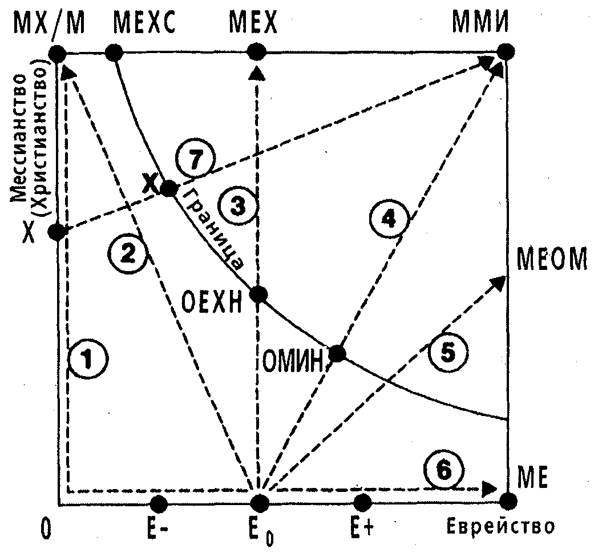

F A .kz
F A .kz


Мессианский еврейский манифест, автор Давид Стерн
ГЛАВА 7
ПРОГРАММА
В этом кратком обзоре программы действий мессианского иудаизма я попытался набросать эскиз на очень большом холсте. Надеюсь, я не оставлю слишком
много белых пятен. Я буду рад, если кто-то откорректирует мой набросок, а кто-то добавит ему цвета и текстуры. Я не расстроюсь, если весь холст
окажется ненужным, и придётся использовать другой. Я уверен, что мессианское еврейское движение будет развиваться, и ему придётся подумать о том,
как это будет происходить.
А. Мессианская еврейская община сегодня
1. Цифры, структура
Перед тем как представить эту программу, я должен обрисовать (кратко) состояние сегодняшней мессианской еврейской общины.
Здесь трудно оперировать цифрами, отчасти потому, что существуют проблемы с определениями (кого считать евреем, мессианским верующим, мессианским
евреем?), а отчасти потому, что трудно установить местонахождение еврейских верующих, как бы их ни определяли, и подсчитать их количество.
В последние годы я слышал такие оценки, как 50-100 тысяч еврейских верующих в Америке. Другие говорят, что их количество больше или меньше. В
Израиле может быть 1-3 тысячи еврейских верующих в 25-30 общинах, из которых от трёх до двенадцати ориентированы на еврейский стиль.
Я слышал, что в Великобритании это число составляет 3-5 тысяч еврейских верующих, а в других западных странах приблизительным числом может быть
один процент еврейского населения. Согласно Рихарду Вурмбрандту (еврейскому верующему, освобожденному из коммунистической Румынии после
четырнадцати лет, проведённых в тюрьме за веру) в Москве насчитывается, по крайней мере, шесть тысяч еврейских верующих; методом экстраполяции
можно определить, что число верующих евреев России должно составлять несколько десятков тысяч. Назовите все эти числа догадками, и на этом
закончим.
В Соединенных Штатах существует около 120 мессианских еврейских общин, в основном, независимых, но среди них есть и филиалы христианских
организаций. Есть миссии, основным служением которых является проповедь Евангелия евреям; некоторые материально поддерживают мессианские общины,
другие проводят регулярные собрания.
Существуют также радио- и телевизионные служения, издательства, школы и лагеря, связанные с нашим движением. В ориентированных на язычников церквях
также есть много еврейских верующих (более 200 в одной большой калифорнийской церкви); есть и другие еврейские верующие, которые находятся
практически в изолированном положении.
Существует покровительственная организация для отдельных мессианских евреев — Мессианский Еврейский Союз Америки. Насчитывается четыре союза общин:
Союз Мессианских Еврейских Общин (харизматический, независимый), Международный Союз Мессианских Общин и Синагог (харизматический, ответвление
МЕСА), Братство Мессианских Общин (нехаризматическое) и внутриконфессиональные группы в рамках организации «Ассамблеи Божьи».
Международный Еврейский Христианский Союз, основанный в 1925 г. в Великобритании, где и поныне расположена его штаб-квартира, включает тринадцать
национальных союзов-филиалов: в Аргентине, Австралии, Бразилии, Канаде, Франции, Германии, Великобритании, Голландии, Новой Зеландии, Южной Африке,
Швейцарии, Соединенных Штатах и Уругвае. Недавно в Израиле также был организован союз; во время написания этой книги он ещё не является филиалом
МЕХС. Штаб-квартиры ряда миссий, работающих с евреями, расположены в этих и других странах.
2. Что нас объединяет?
Нас, мессианских евреев, объединяет посвящение Богу, Мессия Йешуа и Святой Дух внутри нас. Нас объединяет то, что мы являемся частью его Тела,
Мессианской Общины, братьями в духе для всех мессианских евреев и неевреев; то, что мы являемся евреями, братьями по плоти для всех мессианских и
немессианских евреев; то, что нашей целью является несение Благой вести в целом и еврейскому народу в частности, то, что мы одинаково чувствуем как
трения, так и братство в отношениях с Церковью и с еврейской общиной, и то, что мы вместе думаем о будущем (я надеюсь, что эта книга тоже сможет
внести в это свою лепту).
3 Что нас разделяет?
Что отделяет мессианских евреев друг от друга? Это могут быть теологические различия, например, по следующим вопросам: какое положение в
мессианском иудаизме (в узком смысле) мы занимаем в сравнении с иудео-христианством? Ассимиляция или еврейство? Мессианская еврейская община или
нет? Харизматическая направленность или нет? Доктрины различаются в зависимости от нашего образования и опыта общения, различается наш поход к
экуменизму (некоторые евреи, получившие мессианский опыт в протестантской среде, сомневаются, можно ли еврейским католикам считаться их братьями в
Господе), различается понимание пророчеств о последнем времени.
Здесь полезно будет вспомнить слова Шауля [Павла]:
"Ибо сейчас мы видим нечётко, словно в зеркале, а потом это будет лицом к лицу.
Сейчас я знаю частично, а потом узнаю полностью, подобно тому, как Бог полностью познал меня" (1-е Коринфянам 13:12).
Нас могут разделять отличия в вопросах практики и в методах. Выдающегося мессианского еврея однажды попросили оставить еврейскую христианскую
общину, так как он носил кипу на собрании. Еврейские верующие расходятся в вопросе о том, стоит ли, в какой мере и как проповедовать Евангелие
евреям. Пусть цветут сотни цветов, но поливать их нужно живой водой.
Различия могут быть в том, кому мы преданы: конфессиям, общинам, другим организациям (миссии, братские группы, служения) или личностям. Выход —
ставить на первое место Бога.
Нас могут разделять борьба за власть и индивидуальные отличия «Я за Шауля1» «Я за Аполлоса» «Я за Кефу» «Я за Мессию». Предостережение «не
прикасайтесь к помазанным Божьим» (1-е Коринфянам 1:12, см. Псалом 104:15) часто является сигналом опасности, предупреждающим о том, что кто-то
пытается захватить власть. Средство против этого приводится в Послании к Филиппинцам 2:4: «Не о себе только заботься, но каждый и о других», а
также в следующих далее стихах.
И, наконец, нас может разделять изоляция. Группа отступает с рыночной площади, уходит из сферы духовной битвы и возвращается к ханжеским
банальностям на своей маленькой защищённой территории, разобщая наше движение, лишая нас друг друга. Средство против этого — «будьте тверды и
мужественны» (Второзаконие 31:6,7,23; Иисус Навин 1:6,9,18.)
Б. Программатика и мессианский иудаизм
Слово, которое я использую для теологически-направленного планирования — «программатика». Под ним я подразумеваю теологическую дисциплину,
направленную на составление программы для всего Тела Мессии или же для его части. Она подразумевает утверждение целей, средств их достижения,
приоритетов, определение ресурсов, необходимых для достижения целей, осознание имеющихся ресурсов и определение сроков, то есть основные элементы
планирования, но всё это следует производить в теологическом и идеологическом контексте. Теология (то есть систематизация библейской истины для
определённого народа, культуры и времени) и идеология (согласованная группа идей, связанных с человеческой жизнью и культурой, которой сопутствуют
комплексные утверждения, теории и цели, составляющие социальное, политическое и духовное видение) становятся своего рода ситом, через которое
следует просеивать цели, средства и приоритеты.
Лидеры мессианского еврейского движения сведущи в программатике. Прогресс, наблюдающийся в движении с начала 1960-х, отчасти может быть объяснён
широтой видения и реализацией планов. Большинство лидеров являются прагматиками, постоянно пересматривающими свои планы в соответствии с опытом,
новыми знаниями, новыми нуждами, обратной связью с тем, что произошло к данному моменту, внешними источниками информации и лучшим пониманием
Писания; так и должно продолжаться.
Почему так важна программатика? Потому что «без дальновидности народ гибнет». Согласно толкованию Джорджа Лэдда, этот стих означает, что без
пророческого видения, вдохновлённого Богом, народ погибает. Следовательно, программатика должна отражать такое пророческое видение.
Пророческие утверждения в большинстве своём предполагают условие «если». Они предсказывают «благословения» при одном ходе событий и «проклятия»
(неприятные последствия) при другом. Современная теория принятия решений делает то же самое.
Писание содержит грандиозное пророческое видение Царства Божьего; с этим видением мы не погибнем. Любое наше представление или план должны
вписываться в этот великий Божий замысел. Ключевым стихом этого видения, ободряющим нас при всех обстоятельствах, является: «Притом знаем, что
любящим Бога, призванным по Его изволению, всё содействует ко благу».
Мессианский иудаизм уникален. Ни одна другая община не занимает позицию посредничества, одновременно принадлежа к обеим частям одного народа
Божьего. Следовательно, модели, применимые для различных церковных ситуаций, не обязательно приемлемы здесь.
Мессианский иудаизм — это не просто очередное ответвление Церкви, отличающееся культурными особенностями, подобно корейской церкви или церкви
племени берберов. Ни одна этническая церковь не сталкивается с такими отрывками, как Ефесянам 2:11 и далее; Галатам 2:1-21, 3:28; Римлянам 9-11.
Для понимания мессианского иудаизма существует целый теологический пласт, который просто невозможно встретить в ином месте.
Ничто иное, кроме всестороннего подхода к планированию в свете теологии и идеологии, не может прояснить цели мессианского иудаизма и отразить его
влияние на судьбу евреев, Церкви и всего мира.
В. Какие учреждения нам необходимы
1. Нужны ли нам учреждения вообще?
Важность видения и плана для создания учреждений и неустанного труда для реализации этого была продемонстрирована раби Исааком Мейером Мудрым
(1819-1900), который был ключевой фигурой в превращении реформистского иудаизма в основной элемент жизни американской еврейской общины.
Он приехал в Америку в 1840-х и, сориентировавшись на месте, начал настаивать на том, что американскому иудаизму необходимо три учреждения:
организация для общин, институт подготовки раввинов и организация для общения раввинов — а также новый молитвенник, приспособленный к нуждам
американского общества. И вот результаты его настойчивости: Союз Американских Еврейских Общин (1873); Колледж Еврейского Союза (1875), первым
президентом которого он стал, занимая эту должность до самой смерти; молитвенник союза (который не очень ему нравился, но всё же отражал его
видение); и движение, которое сейчас насчитывает около миллиона членов. Вся инфраструктура этого движения существует благодаря неутомимости одного
человека.
Многие верующие относятся к любым учреждениям и организациям с подозрением. Подозрительным им кажется сам принцип — ведь люди теплые и заботливые,
а организации холодны и бессердечны, они легко становятся средством господства немногих над большинством. Хотя в этом отношении и есть зерно
истины, нижеследующие замечания могут помочь людям начать более позитивно думать о создании учреждений и рассматривать их как необходимые средства,
а не как монстров, которых следует бояться.
На самом деле, когда я говорю о программе по созданию и развитию учреждений, я имею в виду инфраструктуру, окружающую общину; а по своей природе
община должна быть органичной, построенной на межличностных отношениях. Это не означает, что община в своём окончательно виде должна существовать
до создания учреждений; наоборот, целью учреждений является укрепление и развитие общины. Они также направлены на развитие мессианской еврейской
индивидуальности в рамках мессианской еврейской общины.
Мой подход будет скорее абстрактным, чем историческим. Я буду обсуждать необходимые учреждения так, как будто сегодня не существует ничего, что
полностью или частично восполняло бы эту нужду. Другими словами, я большей частью проигнорирую материал, представленный мною в разделе А; люди,
причастные к мессианскому еврейскому движению, будут знать, как применить мою схему к существующим ситуациям.
Чтобы мессианский иудаизм стал тем, чем он должен быть, нам необходима организация широкого («конфессионального») движения, мы должны удовлетворять
потребности общины, а также создавать образовательные и профессиональные учреждения.
2. Организация широкого («конфессионального») движения
Я знаю, что слово «конфессия» пугает людей, поэтому я заключил его кавычки и в скобки, чтобы оно не смогло причинить никакого вреда, а вместо него
использовал неудобный термин «широкое движение», чтобы описать мессианский иудаизм в наиболее широком смысле.
Организация необходима, чтобы активизировать деятельность на различных уровнях и поощрять участие в общине. Она не должна иметь власть над общинами
и личностями, но ей необходимо поощрять их к сотрудничеству.
В ней должно быть несколько «ярусов» или категорий членства, как, скажем, в Национальной Ассоциации Евангельских Христиан (название этой
организации наверняка знакомо некоторым из моих читателей). Конкретнее, структура должна подразумевать:
Принятие отдельных людей.
- Еврейских верующих (мессианских евреев) и их супругов («постоянные члены»).
- Христиан-неевреев, разделяющих нашу точку зрения и желающих поощрять нас в нашем деле («группа поддержки»).
- Людей, которые могут не соглашаться с нами, но которые интересуются нашим движением и стремятся сотрудничать с нами («союзники»). Эта категория
может включать христиан, не особо сочувствующих мессианскому иудаизму, а также некоторых немессианских евреев и светских язычников.
Сотрудничество с организациями.
- Мессианские еврейские общины.
- Нееврейские церкви с большим количеством евреев, как независимые, так и филиалы конфессиональных структур.
- Миссии и другие движения помощи евреям, как независимые, так и конфессиональные. Примеры Служение Избранному Народу, Международное Мессианское
Еврейское Движение, Евреи за Иисуса…
- Нееврейские христианские церкви без мессианских евреев или с небольшим количеством таковых, поддерживающие наши цели. Христианские организации,
отличные от церквей и еврейских миссий, поддерживающие наши цели.
- Заинтересованные синагоги и еврейские общества; ясно, что их сотрудничество с нами не обязательно подразумевает симпатию и поддержку наших целей
(сравните с категорией «союзников» в предыдущем разделе).
Наличие организаций более широкого профиля.
- Организации для отдельных верующих: Мессианский Еврейский Союз Америки.
- Организации мессианских еврейских общин (сейчас их четыре).
- Организация для пасторов; в настоящее время эта функция исполняется в рамках общинных организаций.
- Миссионерские общества; эту роль исполняет Общество Христианского Свидетельства Евреям.
- Центр обмена информацией по свидетельству евреям, а именно Лозаннская консультация по проповеди Евангелия евреям.
- Нееврейские христианские конфессии, активно занимающиеся работой с евреями, такие как «Ассамблеи Божьи».
Другие виды организаций.
- Организации или подгруппы еврейских верующих, например, харизматических или нехаризматических мессианских евреев, мессианских еврейских врачей и
т.д.
- Журналы, газеты, радио- и телевещание, кинокомпании, связанные с движением.
- Образовательные учреждения, связанные с движением.
- Мессианские еврейские общины, преследующие особые цели, такие rак Maoz, Inc.
- Комитеты, преследующие особые цели, например, по теологии, литургии, социальной деятельности, комитеты, поощряющие единство.
3. Общинные нужды
Нижеследующий список нужд, которыми должна заниматься наша община, ни в коей мере не является исчерпывающим.
1). Забота о бедных, престарелых, физически неполноценных мессианских евреях. «Чистое и непорочное благочестие пред Богом и Отцом есть то, чтобы
призирать сирот и вдов в их скорбях и хранить себя неоскверненным от мира» (Яаков 1:27).
2). Содействие алие, демонстрация поддержки государству Израиль, распространение там мессианского иудаизма. (См. раздел Д ниже).
3). Поддержка и организация мессианской еврейской семинарии.
4). Создание библиотеки мессианских еврейских материалов и источников, связанных с еврейско-христианскими отношениями. (Библиотека покойного
Эли Кливленда перешла в Северо-восточный баптистский колледж, отчасти в связи с тем, что еврейские верующие ещё не основали института, способного
разобраться с его более
чем двадцатью тысячами томов.)
5). Содействие теологическому, историческому, философскому и литургическому образованию в мессианском иудаизме.
6). Предоставление учебных материалов по мессианскому иудаизму для мессианских синагог, мессианских еврейских школ и семинарий, для широкой
аудитории, немессианских евреев, верующих неевреев.
7). Подготовка учителей.
8). Создание газет и журналов по мессианскому иудаизму и мессианскому еврейскому образованию.
9). Поддержка презентаций в других средствах массовой информации: телевидение, радио, театральные постановки, фильмы, музыка и т.д.
10). Проведение семинаров по обмену научными мнениями и взглядами по определенным темам — только для мессианских евреев и/или для мессианских
евреев с одной стороны и других евреев или христиан с другой.
11). Создание материалов для улучшения еврейско-христианских отношений, проведение семинаров, форумов, встреч, содействие научным изысканиям в этой
области
12). Решение вопросов общественных отношений, апологетика, отражающая нападки на наше движение, заявления, направленные против неверных еврейских,
церковных и светских представлений и обвинений.
13). Посредничество, разрешение конфликтов между различными группами, фракциями и личностями в рамках мессианского еврейского движения.
Предположительно, эта функция может распространяться на отношения между мессианскими еврейскими группами и еврейскими или христианскими группами,
находящимися вне движения.
14). Сотрудничество с еврейской общиной, где это возможно, например, помощь евреям в выезде из России, поддержка государства Израиль, помощь
пожилым людям — но не поддержка йешив, учение которых направлено против Мессии Йешуа.
15). Сотрудничество с Церковью — на местном, конфессиональном, национальном и межнациональном уровнях.
Для реализации этих и других целей можно представить себе существование нескольких учреждений или же только одного. Нет недостатка в материалах,
освещающих то, как была организована еврейская община. Они могут показать области, которым мессианской еврейской общине следует уделить особое
внимание.
4. Образовательные учреждения
Дабы гарантировать то, что наше мессианское еврейское самосознание, которое мы постепенно развиваем, и знания, приобретенные благодаря исследованию
иудаизма и христианства, будут переданы другим, включая наших собственных детей, мы должны создать специализированные образовательные учреждения.
Хотя основная ответственность за образование в вере, после семьи, лежит на общинах, они редко компетентны в вопросах, поставленных перед движением
в целом.
Нашим детям нужны не только «воскресные школы», то есть проводимые раз или два раза в неделю занятия, но и обычные дневные школы; светские и
религиозные предметы могут быть совмещены в среде, углубляющей веру. Один из ключей к успеху этих школ — создание мессианских еврейских детских
материалов; другой — наличие учителей, которые сами были бы примером мессианской еврейской индивидуальности и образа жизни.
В противном случае мы получим очередную христианскую воскресную школу, использующую несколько еврейских слов, или еврейскую воскресную школу с
вкраплением нескольких христианских терминов. Мессианская еврейская община в Филадельфии, Вашингтонский округ, а также общины в других местах
предприняли более чем многообещающие шаги в этом направлении; они уже воплощают в жизнь свои успешные программы.
Мы также можем подумать о создании колледжа или университета для молодых людей, но наиболее насущной потребностью является семинария или йешива,
где люди, изучающие иудаизм и христианство, а также помогающие развитию интеллектуального аспекта нашего мессианского еврейского самоопределения,
смогут передать свои знания другим.
Кроме того, там можно будет готовить потенциальных мессианских раввинов, пасторов и других служителей. Эта проблема уже начала решаться в
Вашингтонском округе в «Йешиве Мессии» под руководством доктора Майкла Брауна.
Наиболее экономный способ создать мессианскую еврейскую семинарию — использование комбинированной системы. Студентов посылают в еврейские институты
для обучения иудаизму и в христианские — для христианской подготовки, поэтому семинарии остаётся только предложить собственно мессианские еврейские
предметы и всесторонний обзор.
(Обратите внимание на разницу между тем, что приемлемо для детей, а что — для взрослых. Взрослые могут выборочно подойти к языческим христианским и
немессианским еврейским материалам, отвергая то, что кажется им неуместным и неприемлемым в культурном отношении. Дети недостаточно зрелые для
этого. Поэтому очень важно разрабатывать для них именно мессианские учебные материалы).
Расписание такой семинарии должно начинаться с еврейских и христианских курсов, которые можно найти в каталогах существующих семинарий. Необходимо
извлечь из них материалы, которые могут пригодиться в мессианских еврейских курсах, отвергая то, что является для них неподходящим. На
индивидуальном уровне акцент должен делаться на ученичестве, а на социальном — на четырёх видах аудитории.
Расписание должно включать:
- Библия, Ветхий и Новый Завет
- Введение в Библию
- Библейская история и история междузаветного периода
- Библейская теология
- Систематическая теология
- Апологетика для евреев, апологетика для Церкви
- Этика, в том числе вопросы личной морали и социального сознания
- Иврит
- Талмуд
- Мидраш
- Другая раввинская литература
- Галаха и галахический процесс
- Еврейская философия
- Другая еврейская литература
- Еврейская история постбиблейского периода, включая современность
- Мессианская еврейская история, её выдающиеся личности
- Основы духовной жизни
- Еврейские и христианские обряды поклонения; литургия
- Еврейская практика для мессианских евреев
- Проповедь Евангелия
- Отношения с евреями, Церковью и миром, социальная деятельность
- Год учёбы и приобретения опыта в Израиле
Другие проекты могут включать образование для отдельных мессианских евреев, образование для взрослых и летние лагеря для детей, короткие поездки по
Израилю и посещение там местных еврейских верующих.
5. Профессиональные учреждения
Учреждения, способствующие профессиональной деятельности:
- Ассоциация руководителей общин, ассоциация пасторов. В настоящее время существуют, по меньшей мере, два таких коллегиальных объединения, в
которых пасторы могут поделиться своими проблемами, помолиться друг за друга, обогатить друг друга своими знаниями и помочь друг другу.
- Мессианское еврейское теологическое общество для теологов, студентов и специалистов по галахе. Его цель состоит в том, чтобы дать мессианским
еврейским теологам возможность понять, кто из их среды лучше всех сможет критиковать и комментировать их деятельность, а также чтобы они могли
ободрять, исправлять друг друга и объединять усилия. Это общество может издавать журнал, проводить конференции и быть центром для тех еврейских
верующих, которые желают получить религиозное и теологическое образование. Возможно, оно также сможет способствовать исследованию ряда
теологических, философских, идеологических и практических вопросов, волнующих мессианский иудаизм. Оно также может взять на себя ведущую роль в
разработке и провозглашении особой мессианской точки зрения четырём аудиториям.
- Ассоциация мессианских еврейских семинаристов, обучающихся в различных институтах, в которой они смогут вместе рассмотреть мессианские еврейские
проблемы. Это может быть проектом предыдущего учреждения.
Г. Необходимая литература
Если бы у меня в распоряжении было сто мессианских еврейских учёных, я бы мог обеспечивать их работой по исследованию и написанию книгдо конца
своей жизни. Среди материалов, которые я ожидал бы от них, можно назвать следующие:
- Библейские переводы и комментарии.
Десять лет назад у меня были все материалы для написания «Мессианского еврейского манифеста», но Господь не позволял мне заняться этой книгой.
Вместо этого Он побудил меня просмотреть перечень всего, что необходимо мессианскому иудаизму (данная глава основана именно на этом списке), и мой
взгляд остановился на пункте «Мессианские еврейские комментарии к книгам Нового Завета». И Он сказал «Делай это».
Я начал свой комментарий к Новому Завету с Книги Деянии, но вскоре заметил, что наполовину он состоит из возражений против традиционного перевода,
который я использовал. В качестве эксперимента я попытался сам перевести несколько первых глав Книги Деяний и был весьма доволен результатом. Так
появился на свет «Еврейский Новый Завет»
«Еврейский Новый Завет» является переводом Нового Завета с греческого оригинала на английский язык. Он выражает неотъемлемую еврейскую суть Нового
Завета тремя способами, которые я называю:
а) косметическим (или поверхностным),
б) культурно-религиозным,
в) теологическим.
Косметические элементы — использование термина «стойка казни» вместо слова «крест», или имени «Яаков» вместо «Иаков» — наиболее очевидны. Их частое
появление создаёт общий эффект.
Культурно-религиозные элементы более основательно погружают Евангелие в еврейскую обстановку, пример — использование слова «цицит» вместо
выражения «край одежды» в Матитьягу (Матфея) 9:20 при описании того, к чему прикоснулась женщина, страдавшая кровотечением.
Теологические элементы включают то, что упоминалось ранее при разборе письма Мессианским евреям [Евреям]. Новый Договор был не просто «утверждён»,
но «дан как Тора».
Мой «Комментарий к Еврейскому Новому Завету» рассматривает возникающие у евреев вопросы о Новом Завете, о Йешуа и христианстве, вопросы, которые
есть у христиан о еврейских корнях их веры и об иудаизме, вопросы, которые задают мессианские евреи о своём самоопределении и роли.
«Полная Еврейская Библия» предлагает в одном томе «Еврейский Новый Завет» и адаптацию существующего перевода Танаха.
Примечание (для интересующихся): Бог не сказал о написании этих книгах мне словами, но дал мне почувствовать в сердце необходимость осуществления
этого проекта и убрал то, что мешало мне, когда я пытался писать «Мессианский еврейских манифест»
С тех пор, как я начал свой труд, появились две адаптации существующих христианских переводов «Книга жизни», составленная Сидом Ротом, и
мессианское издание «Живой Библии» покойного Дэвида Бронштейна.
Фактический перевод, выполненный еврейским верующим Хаинцем Кэссирером (1903-1979) был опубликован издательством Eerdmans в 1989 году под
названием «Божий Новый Договор».
Йехиэль Цви Хиршенсон-Лихтенштейн (1827-1912) написал комментарий на иврите ко всему Новому Завету, который был опубликован по частям Institutum
Dehtzschianum в Лейпциге, Германия, между 1891 и 1904 гг , с ксилографическим текстом и комментариями, выполненными шрифтом Раши. Он пошёл по
стопам Иоахима Бизенталя (урожденного Рафаэля Хирша, 1800-1886), который составил комментарии к Евангелиям, Посланиям к Римлянам и к Евреям, а
также к Псалмам и Книге Исайи. В двадцатом веке еврейские верующие Виктор Буксбазен, Чарльз Ли Фейнберг и Моше Бен-Майер написали комментарии к
одной или более книгам Библии.
Остаётся необходимость в составлении мессианских еврейских комментариев ко всем книгам Библии, как к Танаху, так и к Новому Завету.
Иерусалимская организация «Нетивья» под руководством Иосифа Шулама готовит комментарий к Новому Завету на иврите, который использует еврейские
источники и пытается отразить еврейское понимание.
2. Другие информативные и академические книги
Нам необходимы мессианские еврейские исследования и труды в области библейской и систематической теологии, этики, литургии, апологетики, еврейско-
христианских отношений и антисемитизма. Нам нужны исследования и труды по истории мессианского иудаизма. Нам необходимы книги, объясняющие суть
мессианского иудаизма, они должны быть ориентированы на различные аудитории. Кроме того, нам нужны библиографические материалы для
исследователей.
3. Биографии и свидетельства
Каждый человек хочет знать, какую работу проводит Бог в жизни других людей, а человек, имеющий подобный опыт, желает поделиться им с другими.
Поэтому в нашем распоряжении имеется много автобиографий, свидетельств и сборников свидетельств.
Ранее я упоминал биографический сборник Бернштейна и предположил, что включение примеров верующих нашего столетия было бы весьма желательным.
Иначе мы просто забудем о них.
Взять хотя бы такую личность, как раввин Даниэль Цион (1883-1979). Он перевёл Сидур на болгарский язык и был главным раввином Болгарии на тот
момент, когда узнал о Йешуа и уверовал в него. Благодаря своей вере и положению он пользовался уважением царя Бориса II. В критическое время 1943-
1944 гг , когда нацисты хотели депортировать евреев в лагеря смерти, Рав Даниэль убедительно просил царя не позволить этого, и последний
прислушался к его мнению. В результате 86% из 50 тыс. евреев Болгарии были спасены, и эта самая высокая цифра из всех стран, пострадавших от
нацизма, за исключением разве что Дании.
После Второй Мировой войны он совершил алию практически вместе со всеми болгарскими евреями. В Шабат он совершал утреннее богослужение в своей
синагоге в Яффе, а днем учил Новому Завету. Кроме того, он является автором около 200 мессианских еврейских песен, некоторые из которых и сейчас
поют в Израиле. Его история — одна из многих, которые будут утеряны, если исследователи и писатели не займутся ими.
Лично я очень хотел бы прочесть две книги, если бы кто-то написал их — и если никто не сделает этого, у меня будет очень сильное искушение сделать
это самому. Одна из них будет о чудесах в жизни мессианских евреев, а вторая — о том, как встречаются и женятся мессианские евреи.
Вот три антологии свидетельств евреев, принявших мессианскую веру, изданных за последние десятилетия Ruth Rosen, ed , Jesus For Jews (San Francisco
A Messianic Jewish Perspective 1987), Mike Evans with Bob Summers, Young Lions of Judah (Plainheld, New Jersey Logos International, 1974), James
Hefley, The New Jews (Wheaton, Illinois Tyndale House Publishers, 1974).
А вот три антологии свидетельств евреев, уверовавших 50-150 лет назад Henry and Mane Einspruch, eds , Would P Would You (Baltimore, Maryland The
Lewis and Harriet Lederer Foundation, 1970), Jacob Garthenhaus, Famous Hebrew Christians (Grand Rapids, Michigan, Baker Book House), Zola Levitt,
Meshumed' (Chicago Moody Press, 1979).
Этой информацией я главным образом обязан Иосифу Шуламу, принадлежащему к болгарской еврейской общине Израиля. Я встречал Рава Даниэля в 1974 году
и лично слышал его свидетельство.
4. Другие книги
Вот несколько предположительных названий: «Мессианский еврей и государство Израиль» (см. раздел Д.), «Талмуд глазами мессианского еврея»,
«Отношение евреев к христианству и мессианскому иудаизму».
Существует ряд очерков, написанных немессианскими евреями, но практически нет трудов, принадлежащих перу мессианских евреев. Книга должна покрывать
промежуток времени, начинающийся с Талмуда, включая Средние века, и вплоть до настоящего времени. В том, что касается современности, важно отличать
ортодоксальные взгляды от реформистских и светских.
Итак, следует составить книги:
1). «Мессианское еврейское понимание Библии». Сравните с христианской книгой «Приглашение в Новый Завет» В. Д. Дэвиса и с немессианским трудом
«Еврейское понимание Нового Завета» Самуила Сандмела.
2). «Галаха глазами мессианского еврея».
3). «Мессианский иудаизм и мистицизм».
4). «Проблемы мессианского иудаизма» (чтобы инициировать обмен мнениями по вопросам, вызывающим острые разногласия).
5). «Разновидности мессианского иудаизма». Идея будет заключаться в отображении спектра возможностей с использованием сравнительного подхода,
проиллюстрированного свидетельствами и биографическими очерками. Можно привести примеры соблюдающих ортодоксальных евреев, которые тайно или
открыто верят в Йешуа, полных отступников от иудаизма, присоединившихся к язычникам в преследовании евреев, ассимилированных евреев, заново
открывших своё еврейство, мессианских евреев, воспитанных в таком качестве, и мессианских евреев, которые по идеологическим причинам воздержались
от присоединения к общинам или от погружения, и так далее.
6). «Мессианская еврейская энциклопедия». Я даже не могу вообразить, что она может собой представлять, но какое впечатляющее название!
5. Детские книги
Детские книги являются популярным средством воспитания веры в юных сердцах. Потому очень и очень важно делать это в мессианском духе. Мы отчаянно
нуждаемся в мессианских еврейских детских книгах для передачи мессианского сознания нашим детям. Прежде всего, нам необходимы мессианские детские
Библии для различных возрастов, как сокращённые, так и полные.
6. Периодические издания
Журналы, газеты, дайджесты и ежегодники могут варьироваться от популярных до научных. Их цель — объяснение того, кто мы такие, разъяснение
Евангелия, апологетика и проповедь Евангелия, взаимодействие и ответ тем, кто пишет о нас в еврейских, христианских и светских средствах массовой
информации, установление целей и приоритетов, призыв к действию и обмен идеями. И опять-таки публикации должны быть адресованы нескольким
аудиториям.
Существующие издания включают The Interpreter («Толкователь»), The Hebrew Christian («Еврей-христианин», издается Международным Еврейским
Христианским Союзом), The Messianic Jewish Alliance Quarterly (Ежеквартальное издание Мессианского Еврейского Союза, издается МЕСА), Mishkan
(теологический форум, издаваемый Объединенным христианским советом в Израиле), а также ряд изданий, принадлежащих миссиям, такие как Issues
(«Вопросы», издается «Евреями за Иисуса», рассматривает проблемы, волнующие немессианских евреев), Jewish Voice («Еврейский голос»), The Chosen
People («Избранный народ», издание Служения избранному народу) и ряд менее известных изданий Израильские издания на иврите включают B'Shuv и Me 'et
Le 'et, редакторами которых являются соответственно Менахем Бен-хайим и Барух Маоз.
7. Проза, поэзия, постановки
Это широкое поле для деятельности. Достаточно вспомнить такие романы, как «Хитон» и «Бен Гур», или стихотворение «Небесная гончая», чтобы увидеть
ценность этих жанров.
8. Другие средства массовой информации
Давайте также отметим другие средства, включая музыку и искусство. Мессианская музыка может использоваться в общине, на сцене, для концертов и
записей.
Изобразительное искусство, графика и ремесленное мастерство могут быть направлены на служение Царству. Танцы, для сцены и для общего участия,
содержат потенциал для служения Царству. Всё это делается уже сейчас, и мы можем ожидать продолжения.
И последняя просьба: качество.
Когда д-р Генри Айнспрух сделал свои перевод Нового Завета на идиш, он постарался сделать это красиво. Книгу иллюстрирует превосходная графика
Эфраима Лилиена, одного из основателей Школы искусств Бецалель в Иерусалиме, эта книга действительно представляет собой нечто особенное. Давайте не
будем довольствоваться посредственностью. Особенно это важно в детских книгах, где рисунки очень важны для передачи смысла.
Д. Мессианских иудаизм и Израиль
1. Израиль как центр мессианского иудаизма
В этом разделе мы обсудим Израиль как потенциальный всемирный центр мессианского иудаизма и то, как мессианский иудаизм должен относиться к Земле
Израиля и к государству Израиль.
Мы заложили некоторое теологическое основание в главе 4, разделы Д-4, Д 5 и Д-6. Там мы пришли к выводу, что Бог исполнит Своё обещание дать Землю
Израиля еврейскому народу, хотя следует сохранять и права арабов, желающих мирно жить на этой земле.
Мы отметили, что мессианский иудаизм, в конечном счёте, сосредоточится в Израиле, во-первых, потому что это предсказывается в Писании «Ибо из Сиона
выйдет Тора, и слово Адоная — из Иерусалима» (Исайя 2:3).
Во-вторых, потому что ни одно значительное движение, сконцентрированное в диаспоре при наличии еврейского государства, не может надеяться оказать
значительное влияние на еврейский народ.
И, в-третьих, это связано с подсознательным чувством, что так и должно быть. Это означает, что в конце, когда «весь Израиль будет спасён»,
израильским правительством будут мессианские евреи.
Дополнительное основание было заложено нами в главе III раздел А-1, где мы указали, что израильские евреи более восприимчивы, чем евреи диаспоры, к
роли еврейского народа в истории Поэтому, скорее всего, они окажутся восприимчивыми и к вести о том, что только через Йешуа эта роль может быть
исполнена.
В главе 2, раздел А-4, мы сказали, что в то время как мессианский иудаизм в диаспоре является легитимным способом выражения новозаветной веры,
наиболее естественным местом его укоренения является Израиль. Это связано с тем, что для Израиля вполне нормально быть евреем.
Еврей в диаспоре, мессианский или нет, сталкивается с реальными трудностями, видя, насколько его жизнь как еврея искажена вне Израиля. Одной из
причин этого искажения является тенденция мессианских евреев в диаспоре считать своей обязанностью «соблюдать» определённые требования, чтобы
доказать свое еврейство. В Израиле еврею не нужно ничего «соблюдать», чтобы доказать, что он еврей. Там практически все (из его окружения – прим.
ред.) являются евреями, поэтому и его принимают как еврея, независимо от того, делает ли он что-либо для этого или нет.
Поэтому мессианская община в Израиле, в принципе, вольна ставить в центре своего служения Мессию и не делать ничего отличительно еврейского. Это не
освобождает нас от обязанности определять подходящие способы выражения мессианской веры, но освобождает от навязчивой мысли о том, что мы можем
раствориться в каком-то ином образе жизни, если не будем «вести себя по-еврейски». Мы можем просто быть самими собой. Это нормально.
2. Мессианская еврейская община в сегодняшнем Израиле
Какова сегодня ситуация с мессианской еврейской общиной в Израиле? Является ли она достаточно сильной для того, чтобы взять на себя обязанности и
ответственность лидера мирового движения с той ключевой ролью в истории, которую, как мы заявляем, оно должно исполнить?
Ответ заключается в том, что хотя израильские мессианские евреи борются со многими проблемами и несут многие бремена, Бог, по Своей благодати,
здесь, в Израиле, готовит нас очевидными и не совсем очевидными способами к исполнению задачи, которая, несомненно, в один прекрасный день встанет
перед нами.
Духовно неразвитая страна. Мне кажется подходящим начать свой анализ с понятий, с которыми я познакомился, когда учился на экономиста. Я
рассматриваю Израиль как духовно неразвитую страну. Свойством экономически неразвитых стран, помимо очевидного факта низкого уровня доходов
(который также имеет духовную аналогию), является недостаток хорошей экономической инфраструктуры. В бакалейных магазинах заканчиваются запасы в
связи с тем, что транспорт не справляется со своей задачей; электричеством снабжается только половина страны, но и там его часто отключают;
дорожные знаки встречаются редко и часто не работают в связи с недостатком запчастей и компетентного обслуживающего персонала; недостаёт
специалистов по бизнесу, особенно в области менеджмента.
Подобная ситуация наблюдается и в духовном мире. Страны с большим количеством верующих и длительной историей веры в Йешуа располагают хорошо
развитой духовной инфраструктурой. Практически на каждом углу находится церковь. Школы, семинарии, библейские лагеря и консультационные центры
доступны в большом количестве. Евангелие провозглашается молодым и старым, богатым и бедным, атлетам и инвалидам, бизнесменам и бездомным. Десятки
тысяч книг, основанных на новозаветной истине, можно приобрести в легкодоступных религиозных книжных магазинах или взять в библиотеке. Кроме всего
прочего, существуют хорошо подготовленные, опытные пасторы и лидеры.
Западные христиане воспринимают всё это как должное, но Израиль практически не имеет ничего из этого. По приблизительным оценкам в стране проживает
от одной до трёх тысяч еврейских верующих, что составляет меньше одной десятой процента от всего еврейского населения страны, насчитывающего около
четырёх миллионов (примерные данные на момент написания книги в 1990 г. – прим. ред.).
Самая большая община в стране (был проведён подсчёт среди реально посещающих собрание людей, не гостей, на самом большом еженедельном собрании)
состоит приблизительно из 200 человек, в то время как остальные общины (25 или около того) посещают по 15-20 человек.
Книги, основанные на Новом Завете, можно приобрести в девяти или десяти магазинах на всю страну. Теологическое образование только зарождается; то,
что можно назвать семинарией или библейским колледжем, находится в будущем. На самом деле, нет ни одной всеобъемлющей книги на иврите по библейской
или систематической теологии. Программы помощи слабы, разбросаны и не имеют последовательной направленности на какую-либо конкретную
подгруппу.
Экономия за счёт масштаба. Термин «экономия за счёт масштаба» относится к преимуществам, присущим большому предприятию исключительно благодаря его
размеру. Но наша община мала, и по этой причине у нас нет экономии за счёт масштаба. Церковь в Америке, состоящая из тысячи человек, обеспечив
некоторых прихожан работой консультанта, учителя, водителя автобуса и дворника, при этом ещё располагает значительным количеством людей для участия
в молитвенных собраниях, евангелизации, пения в хоре и организации обедов. Но кегилла (община, евр. – прим. ред.) из двадцати пяти человек,
выполняющая подобный объем работы, живёт в состоянии постоянного истощения.
Любой прихожанин в маленькой общине берёт на себя огромный груз работы только ради сохранения данной группы. Любой новый план, требующий отдачи
энергии, встречается с тяжёлыми вздохами.
Особенно это характерно для Иерусалима, где огромное число туристов посещает несколько небольших общин города, чтобы пережить благословение от
участия в служении в том городе, где зародилась Церковь. Часто на служении больше посетителей, чем прихожан общины, и я думаю, это будет
продолжаться вплоть до возвращения Мессии (а возможно, и после этого). Гостеприимность требует, чтобы мы учтиво обращались с этим не иссякающим
потоком братьев и сестер, желающих посетить нас, так для многих из них паломничество на Святую землю является апогеем веры. Однако это только
усиливает давление на Тело Мессии в Израиле.
Мессианская община Израиля. Одно из преимуществ, которые есть у нас в Израиле, — чувство Тела в национальной смысле. То есть можно говорить о
«мессианской общине Израиля» так, как это было бы неуместно по отношению к «церкви Америки».
Путешествуя, посещая конференции и общаясь с другими, верующий здесь через два-три года будет иметь друзей по всей стране. Я могу ожидать, что
приеду в любую общину «от Дана до Беершевы» и увижу людей, которых знаю лично, за которых молился, о которых слышал, или которые знают тех людей,
которых я вижу всё время. Когда было разрушено здание, где проводились собрания общины Тверии, братья и сёстры по всей стране были обеспокоены этим
и предприняли определённые действия для решения этой проблемы.
Здесь существует глубокое единство, преодолевающее доктринальные и личностные различия, единство, которое возникает благодаря уверенности в том,
что «мы вместе». Конечно, в некоторой степени эта близость чувствуется благодаря тому факту, что Тело здесь очень невелико — оно сопоставимо с
одной относительно большой церковью в Соединенных Штатах.
Национальные конференции. Мы проводим ряд конференций, в которых участвуют 100-200 человек; эти конференции нужны верующим для духовного выживания;
ведь если ваше общение ограничивается пятнадцатью или тридцатью членами собственной общины, мессианская жизнь быстро становится неполноценной,
однообразной, изолированной. Мессианская ассамблея и родственные общины проводят конференции в современном здании на горе Кармель в Хайфе.
«Нетивья» проводит семинары дважды в год. На протяжении последних восьми лет ряд музыкальных конференций выявил много талантов среди израильтян, и
уже более ста песен записаны на кассетах, напечатаны в песенниках и поются по всей Земле, а многие из них полюбились всему миру.
Ещё одна конференция, которая началась как собрание для молодёжи в пасхальную неделю 1981 года, привлекла 200 взрослых и детей за семь лет. Но в
Израиле ни один центр для проведения конференций, которым владеют верующие, не может вместить больше этого числа, хотя планируется расширение
«Баптистской деревни».
Первое собрание, имевшее узкую еврейскую направленность, было организовано в 1986 году Ари Сорко-Рамом и общиной Рамат-ГаШарона; его главным
учителем был Дэниэл Джастер. Две последовавшие конференции были названы «Шавуот-88» и состоялись в Иерусалимском дипломатическом отеле; их посетили
700 мессианских евреев из Израиля, Америки и других стран, и такое же число языческих верующих; они привлекли внимание национальных средств
массовой информации.
«Подборка». До 1989 года Менахем Бенхайим готовил, а Объединённых христианский совет в Израиле публиковал дайджесты сообщений местной прессы о
мессианском иудаизме, христианских миссиях, антимиссионерской деятельности, положительной и отрицательной еврейской реакции, еврейско-христианском
диалоге, культах. К несчастью, эта прекрасная служба более не доступна; возможно, недавно сформированный Мессианский Еврейский Альянс Израиля
возьмётся за её воскрешение.
Проповедь Евангелия и страх. За последние годы резко возросло количество смелых публичных проповедей. Всё ещё можно увидеть старый «молниеносный»
подход — когда брошюры оставляются в почтовых ящиках или на ветровом стекле автомобиля. Но с 1984 года более миллиона евангелических брошюр,
написанных на иврите, было лично передано из рук в руки в совместных уличных кампаниях, которые проводятся три-четыре раза в год в самых больших
городах Израиля. Иаков Дамкани стал пионером в помещении полностраничных объявлений в ведущих ивритских газетах Израиля; первое объявление,
напечатанное прямо перед Йом Кипуром, в 1988 году, изображало закланного агнца на храмовом жертвеннике и было снабжено надписью «Кто является
жертвой?», объясняя половине населения Израиля, как Мессия Йешуа искупает грех.
Когда мы совершили алию одиннадцать лет назад, страх был основным препятствием для проповеди Евангелия. Вот пример. В 1980 году я и моя жена Марта
летели на самолете аэрокомпании «Эль-Аль», чтобы в первый раз посетить «древнюю страну». Женщина, сидевшая за нами, заметила, что Марта читает
книгу о еврейской семье, нашедшей своего Мессию. Эта женщина оказалась христианкой, жившей в Иерусалиме.
Она начала разговор, заметив, что знает автора этой книги. Марта ответила: «Я тоже знаю её, мы встречались, когда я работала с „Евреями за
Иисуса"», и тут наша собеседница, быстро оглянувшись на других пассажиров, прошептала: «Тсс! Нас могут услышать!».
Марта, вполне естественно, повысила тон и спросила: «Что? Почему они не должны знать, что я работала с ЕВРЕЯМИ ЗА ИИСУСА?», так что женщина просто
отпрянула от неё.
Чего так боятся некоторые верующие? Очень просто: они боятся людей больше, чем Бога. Некоторые не желают терять своих еврейских друзей, боясь
оттолкнуть их Евангелием. Часто эти люди не осознают, что израильские евреи гораздо больше открыты для Евангелия, чем большинство евреев диаспоры.
Это связано с тем, что Евангелие не угрожает индивидуальности израильских евреев. Евреи диаспоры, принадлежа к меньшинству в языческом обществе,
находятся в постоянной готовности защищать своё еврейство от всего, что кажется им чуждым; часто единственный «еврейский» поступок, который может
представить себе ассимилированный еврей — отказ от Йешуа. Но здесь, в еврейском обществе, еврей не должен доказывать, что он является евреем —
здесь все такие. Поэтому он может прислушаться к Евангелию и его обещаниям, не отвергая его автоматически.
Многие христиане-неевреи находятся здесь по временным визам и опасаются, что если они будут проповедовать Евангелие открыто, их просто выдворят из
страны. На это мы ответим: ну и что? Предположим, даже 100 из 3500 миссионеров Израиля выйдут на улицы и пойдут от одной двери к другой или будут
распространять Евангелие любым другим способом, на который их вдохновит Господь, делая это открыто и постоянно. Если оппозиции посчастливится
убедить правительство не обновлять визы только десяти из них, это быстро станет причиной для всеобщего прославления имени Йешуа. Разве Бог хвалит
боязливых, не проповедующих «миссионеров» за их бездеятельность в Святой Земле? Некоторые говорят, что они «сеют семя». Может быть, но если так,
где же всходы? Мне кажется, что к вере приходит меньше ста израильтян-евреев в год (то есть меньше одного на тридцать пять миссионеров).
Опасения еврейских верующих могут быть несколько иными. Иногда их увольняют с работы (или не принимают на работу в первую очередь) в связи с их
верой, или же их детям тяжело приходится в школе. Эти люди могут сталкиваться с какой-либо формой дискриминации или запугивания. Но никто не обещал
нам сада из роз, разве что шипы в плоть.
Основной путь для мессианского еврея показать свой страх — остаться так называемым «тайным верующим». Меня спрашивали, сколько таких верующих в
Израиле. Откуда мне знать? Более того, что хорошего они делают кому-либо: себе, Телу, Господу? Как я сказал ранее, на основании Евангелия от Луки
12:8-9 таких людей вообще нельзя назвать верующими.
Я слышал о тайных верующих, и что еще хуже, о христианах, которые поддерживают их в желании остаться таковыми. Но мы молимся о том, чтобы они имели
мужество «выйти из подполья» и открыто постоять за свою веру.
Исторический фактор, объясняющий причину страха, заключается в бегстве еврейских верующих, которое последовало за основанием государства в 1948
году. В это время христианские конфессиональные лидеры, ожидая «чистки» в связи с окончанием британского мандата, эвакуировали многих из них в
Европу и Америку. «Чистка» не состоялась, но местная община была в подавленном состоянии и лишилась лидерства. Эта травма влияла на мышление в
течение тридцати лет; только сейчас новое поколение сабров (жарг. значение: рождённый в Израиле – прим. ред.) растёт в вере, свободной от паранойи,
будучи способным реально оценивать оппозицию.
Оппозиция. За пределами Израиля ходят слухи о преследовании верующих. Давайте скажем раз и навсегда, что в Израиле с христианами или мессианскими
евреями не происходит ничего, заслуживающего названия «преследование», по сравнению с коммунистическими и мусульманскими странами. Никого не
убивают, не сажают в тюрьму и не подвергают пыткам за веру.
Те не менее, существует реальное противостояние верующим и Евангелию. Физические нападения на отдельных лиц редки, но существует социальное,
экономическое и психологическое запугивание, включая прослушивание телефонных разговоров, установку подслушивающих устройств, слежку и просмотр
почты (трудно сказать, в какой мере).
Иногда имеют место случаи вандализма. Здание Баптистской церкви было сожжено до основания, бандиты разрушили гостиницу, в которой обычно проходили
собрания общины Тверии, в Мессианской ассамблее Иерусалима было сломано пианино. Можно также упомянуть о не иссякающем потоке словесных оскорблений
в адрес Йешуа, Евангелия и верующих со стороны небольшой группы «антимиссионеров».
Более того, несмотря на существующую в принципе свободу религии, правительство не всегда отстаивает её с той же решительностью, которую привыкли
видеть законопослушные американцы; вместо этого антимиссионерская деятельность получает, по меньшей мере, молчаливое одобрение со стороны
определённых ветвей правительства, а иногда даже пользуется финансовой поддержкой.
«Но, — спросят меня люди, — разве в Израиле рассказывать евреям об Иисусе не противозаконно?» Нет, это не так. В 1977 году вышел закон против
подкупа кого-либо с целью изменить его религию, официально указанную в его удостоверении личности. Но никто и никогда не был обвинён в совершении
этого, не говоря уже о том, чтобы быть осуждённым (а недавнее готовившееся дело, не имевшее никаких шансов на рассмотрение в суде, было спокойно
закрыто правительством). Более того, большинство евреев, уверовавших в Йешуа как в Мессию Израиля, не меняют своего официального статуса и
принципиально не стали бы делать этого, так как они не перестали быть евреями.
«А вдруг о нас узнает организация Йад ЛеАхим?» (Йад ЛеАхим буквально означает «рука за братьев», также эти люди известны как Пейлим, «Активисты».
Это самая известная антимиссионерская организация). Это возвращает нас к теме страха, и наш ответ: предположим, ну и что? Гораздо важнее
распространять Евангелие, чем тратить время впустую, пытаясь разгадать и предвидеть массу нудников. Пейлим составляют доклады про миссионеров и
еврейских верующих, в основном полные лжи, инсинуаций (клеветы – прим. ред.) и неверной информации. Вот пример, имевший место несколько лет назад:
в одной из публикаций было написано, что христианский рабочий был вышвырнут из страны. Подразумевалось, что его заставили уехать Пейлим. В
действительности, человек, о котором шла речь, умер несколько лет назад.
Более того, их не просто поддерживает мало людей, но число тех, кто настроен против них (а это светские и другие евреи, презирающие религиозный
экстремизм в любом его проявлении), довольно велико. Мессианский еврей может встретить сочувственное отношение в Израиле, обращаясь к светским
евреям, которые, не будучи расположены к принятию Йешуа, выступают за соблюдение гражданских прав и противостоят косной ортодоксальности.
В общем, тем, кто распространяет Евангелие, следует ожидать противостояния — читайте Книгу Деяний. Но здесь не происходит ничего, что заслуживало
бы громкого названия «гонений». Никто здесь не был «побит камнями и вытащен за город, будучи почитаем умершим» за проповедование Слова, как это
произошло с Шаулем (Деяния 14:19). Что же мне сказать: «Слава Богу!» или «Позор нам!»?
Ответ на противостояние. Стоит отметить (подобно тому, как Шауль надеялся на то, что его римское гражданство защитит его право проповедовать), что
верующее сообщество учится отвечать оппозиции зрелым и сдержанным образом, вместо того, чтобы отступать за закрытые двери «из опасения Иудеев» (как
традиционно переводится Йоханана [Иоанна] 20:19).
Наши друзья Ари и Шира Сорко-Рам подали иск на мэра Рамат ГаШарона за клевету, возведённую на них на заседании городского совета, когда он описал
их как «миссионеров», которые «подкупают детей, чтобы обратить их в христианство», этому человеку пришлось напечатать опровержение. Пейлим
стремились заставить администрацию Иерусалима возбудить дело против организации «Нетивья» за проведение общественных митингов в жилом здании
(несмотря на то, что администрация разослала предупредительные письма десяткам таких нарушителей, но никого из них не вызвала в суд). Мы хотели
разрешить эту досадную ситуацию и попросили судью не возбуждать дела на основании религиозной дискриминации, и в результате администрация, по-
видимому, закрыла дело. Но у нас всё ещё нет информационного центра, рассматривающего случаи публичной клеветы, возводимой на Йешуа и его
Тело.
Использование оппозиции для распространения Евангелия. Оппозиция ожидает, что верующие просто испугаются, и, к сожалению, эти ожидания слишком
часто оправдываются. Мы выступаем против этого, осознавая важность смелости и стратегии. Вот пример.
Время от времени Пейлим проводят кампании против христиан в целом и мессианских евреев в частности. Это помогает им убедить тех, кто поддерживает
их за границей, в том, что они действительно что-то делают. В 1985 году они расклеили по всему Иерусалиму листовки, предупреждающие евреев не иметь
ничего общего с общиной «Нетивья», Мессианской ассамблеей, Центром Каспари (который занимается теологическим образованием верующих, говорящих на
иврите) и Баптистской церковью (в которой есть ряд еврейских верующих). Обычно верующее сообщество не высказывает своей реакции публично, в лучшем
случае кто-то может послать письмо редактору The Jerusalem Post. В этом случае мы взяли на себя инициативу и написали следующий плакат на
иврите:
МЕССИАНСКИЕ ЕВРЕИ
БЛАГОДАРЯТ ПЕЙЛИМ ЙАД ЛЕАХИМ!
Мы хотим поблагодарить эту маленькую группу ультраортодоксальных экстремистов за рекламу, которой явились их плакаты и демонстрациидля четырёх
групп христиан и мессианских евреев, которые учат о МЕССИИ ЙЕШУА!
Мессианские евреи и их друзья приглашают всех желающих узнать о Новом Завете и Йешуа, Мессии Израиля, прийти в [и далее названия, адреса и номера
телефонов четырёх групп].
Возможно, было вывешено не более двадцати таких плакатов, и все они были сорваны через несколько часов; тем не менее, они оказали чрезвычайно
сильное воздействие на оппозицию. О нашей реакции было написано, по крайней мере, в трёх газетах, публикуемых на иврите, и даже в одной еврейской
газете за рубежом. Почему? Потому что она очень ясно показала скрытое послание: «Мы не боимся. Мы не будем молчать. Мы употребим оппозицию на благо
Богу». Насколько мне известно, с того времени Пейлим не вывешивали больше никаких плакатов против верующих и ищут другие пути для сбора денег на
свои нужды.
Заключение. Подводя итоги, хотелось бы сказать, что если быть мессианским евреем это самый захватывающий способ проявить своё еврейство, то Израиль
— самое захватывающее место для мессианских евреев. Это подводит нас к следующей теме.
3. Мессианские евреи и алия
Логическим шагом для любого, кто считает, что Израиль является еврейской страной, было бы «совершить алию», то есть иммигрировать в Израиль.
Буквальное значение слова «алия» — «подняться, взойти». Духовная география мира такова, что с любого места, даже с горы Эверест, в Израиль можно
только «подняться».
Но очень мало американских евреев, мессианских или других, действительно совершают алию. В глубине души я убеждён, что в Израиле должно быть больше
мессианских евреев. Мы, мессианские евреи, уже находящиеся в Израиле, можем помочь осуществлению этого двумя способами: поощряя своих детей
следовать нашей вере и донося Евангелие до израильского еврейского населения. И, конечно, третий способ заключается в увеличении числа мессианских
евреев, совершающих алию.
Примечание. За исключением подраздела «Закон о возвращении», раздел 3 напечатан в том виде, как он печатался в издании 1988-го года, когда, до
вынесения решения по делу Бересфордов, я мог с чистой совестью утверждать, что Закон о возвращении позволяет мессианским евреям совершать алию в
Израиль. Но так как в 1989 году израильский Верховный суд решил иначе, теперь я должен написать, что судьи ошибались и что мессианские евреи и те,
кто поддерживает их, должны молиться и трудиться, чтобы изменить сложившуюся ситуацию Итак, читайте раздел 3 вместе с приложением «Информация по
алие, 1990».
Вызов. Только после того, как мы сами приехали сюда и возвратились как гости в Соединенные Штаты, мы по-настоящему поняли, какое безразличие и даже
оппозиция по отношению к алие царит среди еврейских верующих.
Наиболее ярко это проявилось, когда несколько лет назад я был приглашён группой мессианских евреев сделать доклад об Израиле. На этом собрании
присутствовало около ста человек. Я спросил, есть ли среди них евреи, и около половины собравшихся подняли руки. Я попросил тех, кто надеется, что
однажды будет жить в Израиле, не опускать рук, и около 90% рук осталось поднятыми. И тогда я спросил: «А сколько из вас уже начали планировать свою
алию?» И все, за исключением трёх или четырёх человек, опустили руки.
Я сказал группе: «Мне кажется, что вы такие же, как большинство еврейских верующих Америки, с которыми я разговаривал. Они обычно говорят, что
причина, по которой они не начинают планировать алию, заключается в том, что они еще «не чувствуют зов», чтобы ехать. «Но, — сказал я, — вам не
нужен особый зов, потому что как еврейские верующие вы уже призваны Богом, Писанием!
Вы знаете, что Бог дал Эрец-Исраэль евреям, и если это не касается вас, то почему вы называете себя мессианскими евреями? В Книге Исайи 51:11
сказано «И возвратятся избавленные Господом, и придут они на Сион с пением, и радость вечная над головою их, они найдут радость и веселие, печаль и
вздохи удалятся». Судя по тексту, «избавленные Господом» являются остатком Израиля, что в наше время подразумевает мессианских евреев.
В Книге Иезекииля 36:26-28 после того, как Бог говорит «и дух новый дам вам», что исполняется на индивидуальном уровне, когда еврей приходит к
Йешуа, Бог продолжает «и будете жить на земле, которую Я дал отцам вашим», что исполняется, когда еврей приезжает жить в Израиль.
Поэтому если вы ожидаете услышать «зов» от Бога, чтобы совершить алию, тогда вы всё понимаете неверно. Напротив, вам нужен зов от Бога, чтобы
узнать, что вы должны остаться в галуте!
В Писании галут рассматривается как проклятие, а не благословение. У некоторых людей есть такое призвание, и они продуктивно служат в Америке или в
другом месте. Но если лично вас Бог не призвал оставаться диаспоре, то вам серьёзно нужно подумать об алие, не ожидая услышать особое повеление от
Бога. Вы же не встаёте утром и не говорите «Интересно, покажет ли мне сегодня Бог, что я должен ограбить банк или кого-то убить?» Вы уже знаете
Божью волю, так как Он выразил её в Десяти Заповедях, поэтому вам не нужно особое «призвание», чтобы не воровать и не убивать.
Подобно этому, Божье желание, чтобы евреи, как верующие, так и неверующие, совершали алию, является кристально ясным, хотя оно и не отражено в
заповедях.
Еврейское государство находится на Земле обетованной. Приезжайте и живите в нём, станьте халуцим, пионерами. Давид Бен-Гурион и Голда Меир
восстановили Землю физически, но вы будете духовными халуцим, несущими Слово Жизни тем, кто нестерпимо жаждет. Вы можете воодушевить всю свою
общину, чтобы совершить алию группой, как первые пионеры. Планируйте свою алию уже сейчас! Придите с пением на Сион, и радость вечная будет над
вашей головою»
Практический совет. Если вы думаете о том, чтобы внести личный вклад в исполнение обещания о том, что «возвратятся избавленные Господом [т.е.
мессианские евреи], и придут они на Сион с пением, и радость вечная над головою их», вот несколько практических советов для вас.
Первое и самое важное — быть полностью убеждённым в том, что мессианская алия соответствует воле Бога и лично для вас является благом. Как я уже
говорил, большинство еврейских верующих в Америке и большинство неверующих евреев, как и я, до того, как Бог изменил мое мышление, собираются
прожить остаток своей жизни в земле, которая, по их мнению, течёт молоком, а именно в старой доброй Америке.
Но как только возможность, или скорее нормальность мессианской еврейской алии доводится до их сведения, наряду с основанием, взятым из Писания,
многие мессианские евреи воспринимают это с интересом и принимают вызов.
Во-вторых, поддерживайте связь с людьми, которые могут дать вам совет и подбодрить вас. Несомненно, перемена страны проживания влечёт за собой
множество переживаний, но единственный способ выяснить то, что вас беспокоит, и получить ответ на вопросы — общение. А пока я дам вам несколько
основных указаний.
Закон о возвращении. В государстве Израиль есть «Закон о возвращении», который позволяет всем евреям «вернуться домой» в Израиль и стать его
гражданами (американские евреи при этом не лишаются своего американского гражданства).
Изначально этот закон определял «еврея» как «человека, рождённого матерью-еврейкой или обращённого в иудаизм». Но в 1961 году Освальд Руфеисен
(«Брат Даниил») попытался совершить алию, указав в своей анкете, что является евреем по национальности и римским католиком по вероисповеданию. Этот
случай попал на рассмотрение в Верховный суд («Багац»), который вынес решение не в пользу этого человека, заявив, что еврей не может отделять
религию от национальности.
В результате этого, и дела Шалита (1970), в котором определялось, может ли (немессианский) еврей с женой-нееврейкой зарегистрировать своего сына
как еврея, к определению, даваемому понятию «еврей» в Законе о возвращении, была добавлена фраза «не являющийся представителем другой религии и не
менявший добровольно своей религии». В 1978 году Багац постановил, что Эйлин (Эстер) Дорфлингер, верующая в Йешуа, рождённая матерью-еврейкой,
заявившая, что она не меняла религию и была крещена не в Церковь, но, как еврейка, во всеобщее Тело Мессии, не может совершить алию согласно Закону
о возвращении на основании того, что она является, несмотря на свои заявления, «представителем другой религии».
В 1989 году подобное постановление было вынесено в отношении Джеральда и Ширли Бересфорд, являющихся мессианскими евреями, несмотря на то, что
согласно достоверному опросу, 78% израильских евреев с радостью приняли бы их. Подробности об этом опросе общественного мнения и обсуждение
других правовых и этических аспектов мессианской еврейской алии в период, последовавший за делом Бересфорд, см. в приложении «Информация об алие,
1990».
Между прочим, если ваша мать не еврейка, то, согласно галахе и Закону о возвращении, вы также не являетесь евреем. Однако если ваш отец (дедушка,
бабушка) подходит под определение «еврея», данное в Законе о возвращении, тогда, даже если вы открыто говорите о том, что вы христианин, у вас есть
несомненное право иммигрировать в Израиль на основании особого раздела Закона о возвращении, в котором говорится о нееврейских потомках
евреев.
Деньги. Если можете, приезжайте с деньгами. Если год или два тяжелой работы помогут значительно увеличить сбережения, возможно, стоит немного
отложить переезд, потому что в Америке намного проще откладывать деньги, чем в Израиле. (Израильская шутка: Хотите сколотить небольшое состояние в
Израиле? Привезите с собой большое.)
Работа. Если можете, приезжайте с профессией. Но прежде чем потратить годы на подготовку, хорошо подумайте, пригодятся ли ваше образование и
навыки, и хорошо ли оплачивается эта работа. Подумайте, сможете ли вы заниматься ею без хорошего знания иврита, и не было бы для вас лучше получить
профессиональную подготовку в Израиле, а не в галуте.
Иврит. Начинайте учить иврит прямо сейчас. Сколько бы вы ни выучили, все это пригодится. Если возможно, пройдите курс, который даст вам общее
представление о лингвистической структуре и грамматике, потому что израильские улъпаним (подготовительные курсы изучению иврита) никогда не делают
этого. Так как большинство американцев твёрдо убеждены, что английский является единственным «настоящим» языком в мире, необходимость в изучении
иврита является для них серьёзным препятствием для адаптации в Израиле.
Брак, дети. Если вы неженаты (не замужем), неважно, женитесь ли вы там или здесь, хотя «брачный резерв» еврейских верующих в Израиле очень мал. Но
если вы женаты и не имеете детей и думаете, где лучше родиться вашему ребенку — здесь или там, приезжайте в Израиль. Пусть они родятся здесь
немного позже; потому что время и усилия, необходимые для содержания семьи, замедлят ваше изучение иврита и привыкание к культуре, которые являются
необходимыми условиями успешной алии и потребуют минимум 2-3 года.
Если у вас есть дети, всё равно приезжайте! Скоро они будут учить вас ивриту, так как сами выучат его гораздо быстрее вас. Говорят, Израиль —
единственная страна, в которой матери учатся родному языку у детей.
Духовные нужды. Планируйте также духовные вопросы. Начните с консультации со своими старейшинами и общиной, чтобы иметь духовную поддержку, так как
вы совершаете очень Важный шаг в своей жизни. Нельзя всё делать наобум. Необходимо быть готовым к прибытию на новое место. Вам нужно установить
контакты в Израиле, поддерживать связь с другими верующими, чтобы не стать духовным сиротой. Если вы не сделаете этого, то волнение, трудности и
культурный шок, возможно, приведут к одному из трёх последствий, и все они негативны: вы будете духовно изолированы и, следовательно, бесполезны
для Царства, или вам просто не удастся приспособиться к жизни в Земле, или вы отойдёте от веры.
Мне известно несколько таких примеров, и все это можно было бы предотвратить, если бы эти люди меньше страдали паранойей и были более усердны в
общении с местными верующими.
Визит. Если вы можете себе это позволить, а особенно если вы никогда не были в Израиле, приезжайте сюда на четыре или шесть недель, чтобы
почувствовать Землю. Свяжитесь с верующими в Израиле, чтобы мы смогли указать вам полезные направления и ответить на ваши вопросы. А затем
вернитесь домой, чтобы спланировать свою алию на основании непосредственного опыта. Ведь если картина стоит тысячи слов, то посещение страны стоит
миллиона картин.
Попросите совета. Конечно, легче спросить у человека лично, но даже через океан вам смогут посоветовать, что с собой брать, где жить, дать
консультации о том, где и когда делать покупки, какие вам нужны анкеты, рассказать о жилье, работе, финансах, об изучении иврита, о том, как
завести друзей, о духовных вопросах — в общем, обо всех деталях, которые, вместе взятые, либо сформируют, либо сломят всякого новоприбывшего.
Верующие, уехавшие перед вами, помогут вам. Таким образом, вы избежите ошибок и будете подготовлены к трудностям — их будет много, но это того
стоит.
Оставьте страхи. Вспомните, что когда Моисей послал двенадцать разведчиков в Эрец-Исраэль (Числа 13-14), только двое — Иисус Навин и Халев —
возвратились с добрыми вестями, поощряя людей пойти и завоевать Землю; но десять принесли вести совсем не добрые, описывая обитателей земли как
слишком сильных для того, чтобы их победить. Как мы знаем, люди поверили десяти и отказались идти, хотя Бог ждал от них противоположного. Почему же
они отказались? Подумайте об этом. У них был выбор. Они дали место страху, а не вере. Я принес вам добрую весть о Земле Израиля. Идите и завоюйте
её!
И, наконец, мы и другие еврейские верующие, совершившие алию из Америки и других мест, можем стать для вас домом вдали от дома, маленьким кусочком
«древней страны» для мессианских еврейских туристов, желающих совершить алию, и для переживающих культурный шок мессианских еврейских олим
(иммигрантов), ободряя вас, когда вам одиноко, когда вы чувствуете себя подавленными или разочарованными.
Поскольку большинство из нас всё ещё находятся в процессе абсорбции, наше положение дает нам возможность помочь вам подняться по этой лестнице на
ступень или две. Приедете ли вы в гости или навсегда, мы скажем вам: «Барух га-ба ба-шем Адонай (Благословен грядущий во имя Господа)».
4. Мессианская еврейская программа в отношении Израиля
Мессианское еврейское движение должно создать подходящие институты для поддержки мессианской еврейской алии, а также для оказания содействия
мессианскому иудаизму и проповеди Евангелия в государстве Израиль.
Также должны существовать организации, предназначенные для сотрудничества с немессианской еврейской общиной в том, что касается поддержки
государства Израиль, хотя это следует делать осторожно. Я знаю церковь, которая давала значительные суммы денег государству Израиль, а оно
распределяло их таким образом, что некоторая часть финансов попадала в руки ортодоксальных йешив, которые учат людей ненавидеть Йешуа. Это не
является мудрым попечительством. Лучше предназначить эти средства для оказания помощи старикам, для посадки деревьев или любой нейтральной
деятельности.
Мессианское еврейское движение должно быть осторожным при сотрудничестве с (нееврейскими) христианскими сионистскими организациями, так как они
могут преследовать несколько иные цели, иметь иные мотивы и иные ограничения. Организационное отделение может оказаться лучшей тактикой.
Вне зависимости от того, что делает мессианское еврейское движение в целом, отдельные мессианские евреи могут поддерживать Израиль, посещать
Израиль или совершать алию.
Е. В каком направлении следует идти?
В книгах по теологии и в манифестах я никогда не видел ничего подобного следующему рисунку. Однако, будучи экономистом, я видел около двадцати
диаграмм, подобных этой, в каждом номере «Американского экономического обзора». Да, я знаю, что Томас Карлайл считал экономику унылой наукой, но
попытайтесь выслушать меня.

Горизонтальная ось измеряет «еврейство» Это может подразумевать степень участия, жизни еврейской общины, регулярное посещение синагоги,
нравственный образ жизни, соблюдение мицвот, «изучение» (так ученики йешив называют раввинское обучение), степень соблюдения кашрута и т.д.
Какой бы набор ни подразумевало понятие «еврейство», чем ближе вы к правой стороне, тем больше его в вас. Вы начинаете с нуля, как ребёнок (на
рисунке это «0», обозначающий «начало» или «ноль»), но по мере взросления вы обучаетесь, становясь всё более и более «еврейским», проходя Е-минус,
(ам-гаарец, буквально «народ земли», но подразумевает человека, несведущего в еврействе) до Е-ноль — «наш средний еврей».
Затем, если вы продолжаете, то переходите к Е-плюс, и если когда-либо вам удастся добраться до ME («максимальный еврей»), то вы «достигаете цели».
Возможно, мне следовало назвать это возвышенное состояния «ТХ», талмид хахам («учёный», «мудрец») или «ЛВ» —ламед-вавник, один из 36 праведников,
ради которых, согласно еврейской традиции, Бог хранит мир.
Вертикальная ось измеряет то, насколько «мессианским» или «христианским» является человек (здесь я использую эти термины как синонимы) Точки на
вертикальной оси обозначают нееврейских христиан (так как евреи здесь обозначаются нулём).
«Мессианский» или «христианский» подразумевает веру в Йешуа как в Спасителя, Мессию и Господа, проявление плодов Духа, наличие теологического
понимания, серьёзную молитвенную жизнь, заботу о сиротах и вдовах и т.д. Вопрос о пропорциях и наличии других элементов я оставляю на читательский
суд. Чем выше по оси вы поднимаетесь, тем больше в вас всего вышеперечисленного, и, достигнув точки МХ/М (максимальное христианство/мессианство),
вы «достигаете цели».
Очевидно, «достижение цели» является абсурдом в обоих случаях, ведь Бог бесконечен, а мы конечны. С другой стороны, наш потенциал уподобляться Ему,
всё больше и больше приближаясь к образу Мессии, совершенствовать себя в направлении еврейства или мессианства/христианства, ничем не ограничен.
Однако в связи с невозможностью нарисовать бесконечную диаграмму придётся довольствоваться тем, что есть.
Немессианские евреи прикреплены к горизонтальной оси, а христиане-неевреи, в основном, остаются на вертикальной оси, но мессианские евреи идут по
вертикальной оси вверх и переходят в пространство ниже и левее линии, обозначенной как «Граница» Это пространство символизирует доступные сегодня
формы для одновременного исповедания еврейской и мессианской веры. За линией Границы, выше и правее, находятся формы, ещё не доступные.
Максимальный мессианский иудаизм (ММИ) будет в верхнем правом углу, «100% еврейский и 100% мессианский» подход может доходить до уровня, не
определённого ныне.
Насколько я понимаю еврейское христианство, его максимальное выражение (МЕХ) было бы менее еврейским, но полностью христианским Для концептуальной
полноты здесь также показан спектр максимально еврейских, но ограниченных в мессианском отношении возможностей (которые дают людям возможность
родиться свыше, но каким-то образом замедляют их рост в Господе.
Теперь возьмем типичного еврея, Е-ноль, Е-0. Бог совершил величайшее чудо, которое только могло произойти в жизни Е-0 — спас его. Что же происходит
с ним дальше? Куда он идет дальше?
Как мы уже видели, в четвёртом веке от него бы потребовали пойти по тропе (1) обратно к 0, вверх по вертикальной оси, полностью усвоить языческие
стандарты и отвергнуть своё еврейство. С четвёртого века это стало приемлемой, даже нормальной дорогой, по которой еврей мог следовать, находясь в
Церкви.
Но Церковь не всегда была такой настороженной и иногда позволяла еврею оставаться самим собой. Однако она не делала ничего, чтобы помочь Е-0
сохранить своё еврейство. Поскольку он пребывал в нееврейской христианской церкви, а друзья его в основном были нееврейскими христианами, его
поведение и мнения постепенно становились менее еврейскими и более языческими, по мере того, как он рос в вере, следуя указан ной тропе
(2).
И вот в 19 веке возникает еврейское христианство и говорит, что еврей может оставаться евреем, будучи при этом христианином. Никто не заботился о
том, чтобы еврейство Е-0 росло, но не было и давления, направленного на его уменьшение, чтобы заставить его всё больше уподобляться язычникам.
Отношение к его еврейству было равнодушным, так как основное внимание уделялось вере. Поэтому он перешёл на тропу (3), не развивая своё еврейство,
но и не отказываясь от уже имеющегося. Если эта диаграмма с её Границей отображает действительность, он достигает ОЕХН (предел еврейского
христианства в настоящем), где становится трудно подниматься прямо вперед (прямо вверх).
То есть для того, чтобы расти в вере, он должен либо первым пересечь Границу, либо отказаться от некоторых элементов своего еврейства Почему так?
Возможно, существует так мало еврейских христиан, сохраняющих своё еврейство даже на уровне Е-0, что он, возрастая в вере, обнаруживает, что
приобретает больше нееврейского опыта и двигается вдоль Границы, всё больше и больше выражая мессианскую веру и завершая свой путь на Границе в
точке МЕХС (максимальное еврейское христианство сегодня).
Точка максимального мессианского иудаизма (ММИ) предлагает другую возможность, а именно, чтобы Е-0 мог расти и в мессианской вере, и в еврействе,
двигаясь по тропе (4). Но вновь на уровне ОМИН (ограничения мессианского иудаизма в настоящем) он достигает Границы; и, согласно схеме, как я её
изобразил, ОМИН является более низким уровнем мессианской веры, но более высоким уровнем выражения еврейства, чем ОЕХН.
Отображает ли подобная Граница (спускающаяся вниз и вправо) действительность — этот вопрос также нужно исследовать. Я надеюсь, что Е-0 не зашёл в
тупик, перейдя на тропу (5), которая ведёт его к ограниченной форме мессианской веры, хотя он и растёт в еврейском познании.
А если он никогда не был спасён, то может последовать по тропе (6) и стать (немессианским) талмид хахам.
ЕСЛИ ВЫ МЕССИАНСКИЙ ЕВРЕЙ, Е-0 — ЭТО ВЫ. В КАКОМ НАПРАВЛЕНИИ ВЫ ИДЕТЕ?
Мы не должны исключать христиан-неевреев из картины.
«X» — такой христианин, который, не пытаясь «иудействовать», решает оказывать поддержку мессианскому еврейскому движению. Он достигает своей
кульминации на тропе (7) по направлению к ММИ. Его опыт, приобретённый на этой тропе, будет сильно отличаться от переживании Е-0.
Если Е-0 находится на тропе (4), то оба преследуют общую цель. X при этом подойдёт к Границе в точке X, которая обозначает «Сегодняшний предел для
христиан-неевреев, поддерживающих мессианское еврейское служение». Она менее еврейская и более христианская, чем ОЕХН. И это неудивительно, так как
X не является евреем. Он усваивает еврейский стиль жизни как постороннее лицо, при этом его опыт, возможно, включает христианские культурные
элементы, которые не разделяет Е-0. Даже на границе (как нарисовано) его «еврейство» приблизительно равно Е-минус, ам-гаарец.
Но должен ли Е-0 смотреть на X сверху вниз за это? Никогда! В Господе мы любим друг друга, считаем других лучше себя, не делаем ничего из эгоизма
или тщеславия, имеем единый разум и согласие. Американский плавильный котел давно уже превратился в котелок для приготовления пищи, поэтому мы
можем ценить друг друга за то, кем мы являемся на самом деле, не стремясь к тому, чтобы язычники стали больше походить на евреев, а евреи — на
язычников. ММИ является целью, к которой могут стремиться и евреи, и язычники, не копируя друг друга.
Мы можем больше поговорить об этом рисунке, находя значение для других точек, дорог и религий, представленных на диаграмме. Ещё одним интересным
интеллектуальным экспериментом будет анализ того, что получится, если нарисовать Границу по-другому или передвинуть её.
Но существует другое измерение, измерение, которое выходит за рамки данной книги, за рамки всяческих диаграмм, и восходит на небеса, к Господу. Это
измерение нельзя показать на бумаге, в нём нужно жить. Без этого измерения «максимальный мессианский иудаизм» привязан к земле, он безжизнен, как
слова и схемы в книге. С этим измерением живого Бога мессианский иудаизм достигнет того, что ему предназначено, и Бог, сотворивший всех нас и
давший нам нашу Тору и нашего Мессию Йешуа, приведёт нас к Своей обещанной цели.
О, глубина богатства, мудрости и познания Бога!
Как непостижимы Его суды! Как неисследимы Его пути!
Ибо от Него и через Него и для Него все Ему да будет слава вовеки!
Амен!
(Римлянам 11:33,36, «Еврейский Новый Завет»)
ПРИЛОЖЕНИЕ: ВОССТАНОВЛЕНИЕ ЕВРЕЙСКИХ КОРНЕЙ ЕВАНГЕЛИЯ
А. Вступление
Это приложение содержит одно простое послание, а именно, если Церковь не сделает всё, что в её силах, чтобы восстановить еврейские корни Евангелия,
она утратит ключевой элемент Божьего послания. Вследствие этого она не сможет правильно исполнить Великое Поручение, а еврейский народ не сможет
быть «светом для народов».
Семь глав основной части этой книги исследуют то, что подразумевают вышеупомянутые «еврейские корни», и подводят к тому, что основное бремя по
развитию мессианского иудаизма должно пасть на плечи мессианских евреев. Однако это приложение в основном адресовано христианам-неевреям,
составляющим подавляющее большинство в Церкви; а моё заявление о том, что необходимо восстановить еврейские корни Евангелия, является единственной
идеей, которую я хотел бы довести до сознания всех верующих. Я прошу нееврейских христиан взять на себя долю ответственности за восстановление
еврейских корней Евангелия и сделать всё, что и их силах, чтобы донести эту концепцию до тех представителей Церкви, которые могут оказать
содействие в достижении этой цели.
Когда церковь провозглашает Евангелие, не восстанавливая его еврейской сути, ей в лучшем случае не удаётся провозгласить «всю волю Божию» (Деяния
20:27). В худшем случае она может передавать людям то, что Шауль [Павел] называет «иным благовествованием» (Галатам 1:6-9).
Более того, не только евреи страдают от этой бесцельной проповеди — язычникам это также причиняет ущерб. Потому мне кажется, что я фокусирую
внимание на чрезвычайно серьёзной проблеме, которой христиане не уделяли того внимания, которого она заслуживает.
Вместо «восстановления» в миссионерских кругах принято учить «приведению Евангелия в соответствие со средой, культурой». Раздел Б исследует, почему
это является неадекватным подходом к проповеди Евангелия евреям.
В разделе В я рассматриваю три суждения, с которыми, я думаю, согласятся мои читатели. Они являются непременным условием восстановления еврейской
сути: во-первых, христианство имеет еврейские корни; во-вторых, антисемитизм является нехристианским явлением; и в-третьих, нежелание проповедовать
Евангелие евреям (или игнорирование этого) является проявлением антисемитизма. Также я исследую, что имел в виду Шауль, говоря в Римлянам 1:16, что
Евангелие есть сила Божья ко спасению «особенно еврея».
Раздел Г рассматривает благословения, которые изольются на евреев и на Церковь в связи с восстановлением еврейских корней Евангелия.
См. главу 3, прим. 9, об использовании слов «антисемитизм» и «антисемитский» в этой книге.
Б. Приведение в соответствие со средой или восстановление?
1. Христианство и культура
а). «Межкультурный иудаизм»
«Великое поручение», возложенное Йешуа на Церковь, заключалось в том, чтобы делать учеников из всех народов. Но как только ранние мессианские евреи
начали обращаться к язычникам, возникла необходимость отделить Евангелие от его культурного контекста, чтобы его основное послание не получило в
нагрузку культурный «багаж», который не был необходим для спасения.
Новость о том, что Новый Завет не требует от язычников становиться евреями для получения спасения, стала болезненным переживанием для еврейских
верующих в Йешуа [Иисуса].
Всё началось с видения Кефы [Петра] и уверовавшего Корнилия. Но именно Шауль, апостол язычников, разработал множество деталей. Так, он
присутствовал на Иерусалимском совете, когда Яаков [Иаков] провозгласил, что язычникам не обязательно обрезываться и повиноваться Торе [Закону],
как было принято считать в рамках традиционного иудаизма. Вместо этого единственное требование, которое они должны были выполнить, чтобы быть
полностью принятыми как братья в Господе, заключалось в повиновении четырём мицвот [заповедям], перечисленным в Книге Деяний 15:20.
Позже Шауль ещё более ясно изложил, на что он готов пойти ради приобретения людей — и евреев, и язычников — для Господа. В 1 Коринфянам 9:19-22 он
писал:
"Ибо, будучи свободен от всех, я всем поработил себя, дабы больше приобресть. Для Иудеев я был как иудей, чтобы приобресть Иудеев, для подзаконных
был как подзаконный, чтобы приобресть подзаконных, для чуждых закона — как чуждый закона, — не будучи чужд закона пред Богом, но подзаконен Христу,
— чтобы приобресть чуждых закона, для немощных был как немощный, чтобы приобресть немощных Для всех я сделался всем, чтобы спасти по крайней мере
некоторых.
Цитируя этот отрывок, я вынужден, в связи с традиционной критикой, отметить, что, становясь «всем для всех», Шауль не был хамелеоном и лицемером.
Говоря, что он «стал» таким, как другие, Шауль имел в виду, что он ставил себя на их место, проникался их чувствами, пытался понять об раз их
мышления, обращал внимание на то, «откуда они пришли» и «где находятся». Им двигало желание завоевать потерянные души. А ведь он мог быть ленивым,
мог требовать, чтобы другие сами приспосабливались под него, а не сопереживать им. Но Божье призвание в его жизни заставляло его проделывать
двойной путь, по сути, «порабощать» себя нуждам других людей.
Итак, Шауль не принуждал язычников принимать еврейскую культуру. Он осознавал, что в действительности послание Нового Завета для язычников было,
как выразился Фил Гоубл, «межкультурным иудаизмом». В дальнейшем оно стало именоваться христианством.
б). Не «межкультурное» христианство
Но не все, кто пытался нести Евангелие, минуя культурные преграды, понимали принципы межкультурной проповеди Евангелия, которым учил Шауль. Часто
происходило противоположное. Евангелие путали с культурой, поэтому послание заключалось не только в призыве отвернуться от грехов и прийти к Богу
через Йешуа, но и в призыве оставить свою культуру, отгородиться от неё.
В некоторых частях мира миссионеры жили (да и теперь живут) в созданных ими самими гетто, «миссионерских поселениях». Когда Бог привлекает к Себе
кого то из местных жителей и даёт ему новый дух, миссионеры приводят этого человека в своё поселение и учат его новой культуре (как
правило,западной).
Джеймс Майхенер наглядно описывает этот подход в своей книге «Гавайи». Книга является исторически неточной и изобилует антихристианскими
предубеждениями, но давайте на мгновение посмотрим на проблему глазами автора. Он описывает миссионеров Новой Англии в начале 1800-х годов, которые
требовали от гавайцев строить деревянные церкви с колокольнями и одеваться как пуритане, чтобы стать христианами. Этим людям пришлось стать
чужаками в собственной стране. Да, туземцы часто ходят обнажёнными, а христианское учение требует скромности, тем не менее, скромность не
обязательно подразумевает ношение непривычной одежды. Когда люди становятся христианами, им нужно отказаться только от своих грехов, а не от
культуры, за исключением элементов, нарушающих нормы Писания.
в). «Теперь, став христианином, ты наконец-то можешь съесть бутерброд с ветчиной!»
Если говорить о проповеди Евангелия евреям, то к четвертому веку стало вполне обычным не следовать образцу, предложенному Шаулем для
распространения Евангелия, который был бы естественным и близким для тех, кому оно адресовалось. Наоборот, еврею было недостаточно просто принять
Йешуа как своего Мессию, Спасителя и Господа, он должен был «обратиться в христианство», что обычно подразумевало принятие чужой культуры и иногда
требовало отказа от всего еврейского!
Это можно увидеть в публичном отречении, утверждённом Константинопольской церковью (цитировалось выше), которое требовалось от евреев, желавших
присоединиться к святой Общине еврейского Мессии, Йешуа.
Я показал ранее, что иногда от мессианских евреев требуют «доказать своё христианство» — съесть бутерброд с ветчиной, я рассказывал, как я и моя
жена привели в замешательство христианских лидеров, обнаруживших, что мы соблюдаем кашрут [еврейские законы питания].
Еще один пример многие христиане обижаются, когда мессианские евреи празднуют еврейские праздники вместо Рождества и Пасхи, хотя соблюдение первых
требуется Писанием, а последние — человеческое изобретение. Одним из самых ранних церковных проявлений антиеврейства был спор о праздновании Пасхи
во втором веке, который привёл к язычески-ориентированному постановлению Никейского собора о том, что дата для празднования смерти и воскресения
Йешуа не должна соотноситься с датой еврейского календаря для Пасхи.
Я противопоставляю здесь выражение «обращение в христианство» выражению «стать мессианским евреем». Евреи, обратившиеся в христианство, и
мессианские евреи верят в Йешуа, но вторые сохраняют свою еврейскую индивидуальность (которая подразумевает еврейские обычаи и еврейское мышление),
а это как раз то, что было запрещено еврейским верующим, начиная с четвертого века. См главу 2 разделы А и Б, главу 3 раздел Б-4 (В более
недавние времена многие евреи, обратившиеся в христианство, добровольно принимали решение избавиться, проигнорировать или ограничить степень своего
еврейского самовыражения). На самом деле, в Новом Завете термин «христианин» не используется верующими по отношению к мессианским евреям, но
обозначает язычников пришедших к познанию одного истинного Бога через Йешуа еврейского Мессию. См главу 2, раздел В-4.
Вопрос о том применим ли термин «христианин» к сегодняшним мессианским евреям, об суждается в главе 3, раздел 3.
2. Проповедь Евангелия в контексте культуры
Современные миссиологи — учёные, которые помогают евангелистам и миссионерам в их труде исполнения Великого Поручения — начали изучать проблему
людей, которые были отчуждены от своей культуры, чтобы стать христианами. Так начала развиваться концепция «проповеди Евангелия в контексте
культуры», то есть такое предъявление Евангелия, которое учитывает культуру «адресата». Кто-то может сказать, что это надуманный способ поговорить
о том, что для Шауляя было вполне естественным.
Когда Евангелие проповедуется в контексте культуры, новообращённые христиане остаются в своей культуре и пытаются подчинить и её, и себя Божьей
воле.
а). Евангелие для евреев
Возникновение еврейского христианского движения в Англии и других европейских странах в девятнадцатом веке, в сущности, было попыткой привести
Евангелие в соответствие с еврейским мировоззрением. Еврейским верующим советовали не оставлять свой народ и оставаться евреями, при условии, что
их христианская вера останется ортодоксальной. Их поддерживали в праздновании Пасхи, Хануки и других праздников, а также, по большому счёту, в
выражении своего еврейства. Им также напоминали, что соблюдение ими элементов Моисеева закона не приумножает их спасения — что они, как и язычники,
спасены по вере, а не по «делам закона».
Ясно, что это было отказом от ранее предъявлявшегося к евреям требования отказаться от всего еврейского. Однако с еврейскими верующими обращались
как с отдельными личностями, имеющими свои проблемы, а иудаизм и еврейский народ в целом не рассматривали как единое образование, существующее как
противовес христианству и Церкви и выдвигающее идеи, не согласующиеся с общепринятыми толкованиями библейских истин.
б). Проповедь Евангелия по типу I, II и III
Миссиологи предложили тройную классификацию культурных и лингвистических препятствий, которые нужно преодолеть при провозглашении
Евангелия.
Проповедь Евангелия по типу I применяется к номинальным христианам в вашей собственной культуре. Это люди, которые не только говорят на одном с
вами языке и живут в похожей культуре, они могут посещать церковь, слушать Евангелие и читать Библию. То есть они находятся в христианском
окружении, но не рождены свыше. С точки зрения легкости общения, этот тип проповеди является самым простым (Является ли он самым легким с точки
зрения приведения людей к спасению — это уже другой вопрос).
Проповедь Евангелия по типу II применяется к людям, которые говорят на вашем языке и, возможно, живут в том же или подобном обществе, но при этом
их культурные особенности и религиозные убеждения могут быть совершенно другими. Белые христиане, проживающие в пригородах и несущие Евангелие
неспасённым городским афро-американцам, и афро-американцы среднего класса, говорящие о Мессии с бездомными, — все они занимаются проповедью по типу
II. То же касается и японских христиан в Японии, где религиозной средой является буддизм и синтоизм.
Проповедь Евангелия по типу III несёт Евангелие через культурные и лингвистические барьеры, которые иногда кажутся просто непреодолимыми. Эта идея
хорошо отражена в традиционной картине, изображающей миссионера в джунглях, в примитивном племени, который учит язык, изобретает алфавит, переводит
Библию, борется с чуждым культурным и физическим окружением, чтобы донести Божью благодать. Подобно этому, христиане Кореи или Индонезии,
проповедующие пресыщенной молодежи Европы, могут считать себя занимающимися проповедью Евангелия по типу III.
Каждый из этих типов требует своего собственного подхода к проповеди Евангелия в контексте культуры. Например, возьмём устное предъявление основных
понятий теологии. В проповеди Евангелия по типу I можно использовать «христианский язык» с такими терминами, как «грех», «рождённый свыше» и
«спасённый», целью является раскрыть слушателю духовный смысл этих понятий, чтобы он ответил верой. В проповеди по типу II такая терминология
выглядит странной и неудобной. Нехристианским слушателям эти идеи следует передавать по-другому, используя жизненные примеры, а не церковный
жаргон. В случае проповеди по типу III язык и культура могут создать трудности для выражения этих понятий.
в). А как быть с евреями?
Куда же согласно этой схеме можно отнести евреев? Если кто-то рассматривает еврейский народ как кандидатов на тип II, как не христианских членов
своего общества и языковой группы, он предполагает, что Церковь провозглашает истинное Евангелие, и задача заключается только в учёте некоторых
особенностей.
Тот, кто придерживается этого подхода, будет доказывать, что если житель Самоа может быть христианином и при этом по-прежнему принадлежать своему
народу, почему еврей не может быть христианином и евреем одновременно?
Тем не менее, есть что-то странное, даже неправильное, в том, чтобы говорить о проповеди Евангелия в контексте еврейской культуры, ведь Евангелие
было полностью еврейским! Если корни христианства являются еврейскими, если само Евангелие является еврейским по своей сути, почему его нужно
изменять для евреев?
Ответ заключается в том, что этого делать не нужно, при условии, что Евангелие Нового Завета действительно провозглашается. На самом деле,
Евангелие нужно изменять в соответствии с культурой язычников! Таким было служение Шауля. Это было победой Иерусалимского совета (Деяния 15),
который постановил, что язычникам не нужно становиться евреями для того, чтобы считаться христианами. Это было победой Послания к Галатам 2, где
Шауль противостоит Кефе [Петру] в вопросе о навязывании еврейских обычаев верующим язычникам.
Однако последующая история, которая привела к тому, что от евреев стали требовать принимать языческие обычаи, чтобы стать мессианскими верующими,
говорит о полном отказе от принципов, установленных Шаулем в Новом Завете. Это сигнал о том, что нечто странное произошло с еврейским Евангелием в
ходе истории!
Практика отклонилась не только от принципов Шауля, но и от его собственного поведения. Всю свою жизнь Шауль был благочестивым евреем, соблюдающим
закон. Согласно Книге Деяний, Шауль обрезал Тимофея (Деяния 16.3); регулярно посещал синагогу (17:2); давал еврейский обет (18:18); ходил в
Иерусалим, чтобы соблюсти еврейский паломнический праздник Шавуот [Пятидесятница] (20:16); платил за других евреев, желающих принести жертвы в
еврейском Храме (21:23-27); утверждал перед еврейским Сангедрином, что он паруш [фарисей], и не просто формально (23:7); и заявил римскому
правителю, Фесту, что «не совершил никакого преступления — ни против Торы, которой держатся иудеяне, ни против Храма» (25:8, перевод «Еврейского
Нового Завета»).
И, наконец, выдержав суровую битву, закончив путь и сохранив веру, он мог сказать еврейской аудитории в Риме: «Я ничего не сделал ни против нашего
народа, ни против традиций наших отцов» (28:17), где выражение «традиции отцов» включает Письменную Тору и еврейские традиции. Если такой образ
жизни бы достаточно хорошим для Шауля, то он достаточно хорош и для сегодняшних еврейских верующих. Пожалуйста, никаких бутербродов с ветчиной для
евреев, соблюдающих кашрут!
3. Проповедь Евангелия по типу IV
В сущности, любой еврей может быть мессианским верующим и при этом сохранять своё еврейство, как Шауль. Тем не менее, думать, что это решает все
проблемы, — величайшая ошибка, проистекающая из неверного понимания сути вопроса. Причина кроется в теологии.
С социологической точки зрения, евреи просто являются представителями другой культуры, как и жители Самоа (но на самом деле, не всё так просто,
ведь существует много еврейских культур).
Однако с теологической точки зрения, евреи уникальны, так как Бог избрал их в качестве средства принесения спасения всему миру. Вся еврейская
Библия свидетельствует об этом, как и Новый Завет (см. Йоханан [Иоанн] 4:22, Римлянам 3:2, 9:4-5) Евреи являются Божьим народом в том смысле,
который не применим больше ни к одному народу на земле. В связи с этим Новый Завет просто изобилует теологическими Сциллами и Харибдами, скалистыми
местами, пройти сквозь которые весьма трудно. Какой ещё народ сталкивается с Посланием к Галатам 3:28 («нет уже Иудея, ни язычника») или с
Посланием к Ефесянам 2:11-22 («стоявшая посреди преграда»)?
Если французские христиане «офранцуживают» других верующих, кто делает из этого доктринальную проблему? Но если мессианские евреи занимаются
«иудействованием» — будьте бдительны!
Нет, еврейский народ — это нечто большее, чем просто культура, это народ Божий. Следовательно, задача, которую нужно выполнить в отношении евреев,
заключается не в проповеди Евангелия в контексте культуры так, как если бы оно было адресовано неевреям, с их языческой историей. Это должна быть
такая проповедь, которая была бы верна с теологической точки зрения по отношению к еврейскому народу, чья история и роль в передаче Божьего
спасения являются вечным элементом Священного Писания. Для проповеди Божьему народу необходим тип IV.
Иначе говоря, видоизменение языческой формы Евангелия для евреев является двойным отклонением. Изначально его еврейская форма была видоизменена для
язычников — это был великий вклад в проповедь Евангелия, произведённый Шаулем. Но позже, когда ранние мессианские общины исчезли после тяжёлых
испытаний, изначальная еврейская суть Евангелия также была утеряна, так что Евангелие, изменённое для язычников, оказалось единственным
существующим и стало прокрустовым ложем, в которое старались втиснуть еврейского верующего.
В недавнем прошлом это видоизменённое Евангелие (с еврейской точки зрения) было переработано, приведено в соответствие с контекстом, стало
«выглядеть более по-еврейски». Но двойная переработка совсем не равноценна оригиналу. Если вы смотрите на отражение человека, отражённое в другом
зеркале, это совсем не то же самое, что смотреть на самого человека.
Проповедь Евангелия по типу IV требует не приведения «оязыченного» Евангелия в соответствие с нуждами евреев, а восстановления еврейских корней,
которые присущи Евангелию, но были намеренно скрыты. Более того, христианам-неевреям также необходимы те аспекты Евангелия, которые раскроются
благодаря восстановлению его еврейских корней.
Многие верующие ощущают неловкость и тревогу в связи с восстановлением еврейской сути Евангелия и поощрением мессианских евреев в выражении их
еврейской индивидуальности. Они опасаются проявления высокомерия со стороны мессианских евреев, того, что христиане будут считаться в Царстве
гражданами второго сорта. Это большое заблуждение, ведь Писание предостерегает против разделения евреев и язычников в Теле Мессии.
Однако Новый Завет также даёт уверенность в том, что в Йешуа оба являются одним целым, служа Богу в одном Духе. Таким образом, пусть все верующие,
и евреи, и язычники, трудятся вместе, избегая оскорбительных сравнений, которые идут на пользу только Противнику. Пусть каждый мессианский еврей и
каждый христианин-нееврей проявят в своей жизни те элементы еврейства, которые были пробуждены в их душе благодаря духовному пониманию и осознанию
своей индивидуальности. Пусть они не чувствуют осуждения за слишком сильное или слишком слабое проявление этих элементов. Пусть каждый остается
открытым для Божьего руководства, чтобы этот аспект его жизни, как и все другие, все больше и больше приближал его к образу Йешуа, Мессии евреев и
язычников.
Вняв предупреждению об опасности высокомерия и разделения, давайте зададим себе вопрос: что же на самом деле подразумевает восстановление еврейских
корней Евангелия? Рассмотрением этого вопроса мы сейчас и займемся.
4. Что подразумевается под «восстановлением»?
Восстановление еврейских корней Евангелия означает наполнение содержания Евангелия тем, что связано с еврейским народом и взаимоотношениями между
ним и Церковью. Другими словами, это означает рассмотрение «всей воли Бога», в ее полноте.
Важно понимать, что имеют в виду теологи, когда говорят о «восстановлении». Мы хотели бы увидеть Церковь «восстановленной» в том виде, какой она
была в первом веке. По крайней мере, мы так говорим. Конечно, было бы хорошо восстановить ревностность первых верующих, праведность их жизни, их
решимость в следовании Мессии Йешуа любой ценой, их наполнение Святым Духом, их молитвенное рвение, их уверенность в том, что Бог действительно
совершает чудеса в ответ на веру. Но существуют ли внешние аспекты образа жизни верующих первого века, которые мы намерены восстановить? Или те
аспекты доктрины, которые они принимали, но которые были проигнорированы более поздними верующими? И если это так, то какие именно? И как нам
поступить с ними?
Я считаю, что для начала нам следует направить все усилия на то, чтобы попытаться понять текст Нового Завета так, как понимали его читатели первого
века, согласуя его со своей жизненной ситуацией. Но я не думаю, что мы должны применять Евангелие таким же образом, потому что это подразумевало бы
восстановление ситуации первого века, что невозможно даже при всем желании — ведь время не повернуть вспять. Мы должны начать правильно понимать
Писание, а затем применять его должным образом к нашей собственной ситуации.
Предыдущие абзацы не содержат новую философию. Они отражают знакомый подход, который обычно приводит к постановке вопроса о том, следует ли
понимать указания и предписания Нового Завета буквально, или же, прежде всего, стоит обратить внимание на общий принцип, стоящий за письменной
заповедью. Например, такое место как 1 Коринфянам 11:2-15, поднимает вопрос: должна ли женщина покрывать голову на собрании общины в наше время?
Или же это требование относилось только к ситуации первого века, и сейчас оно просто означает, что женщины должны одеваться скромно по нынешним
меркам?
В своей книге я не обращался к вопросам такого рода, хотя они приобретают практическую важность по мере развития мессианского иудаизма. Я попытался
обратить внимание на те аспекты Евангелия, которые были очевидны для верующих первого века, но которые были упущены из виду на протяжении
последующих веков.
Восстановление еврейских корней Евангелия подразумевает, во-первых, поощрение мессианских евреев в том, чтобы они развивали мессианский иудаизм, и,
во-вторых, обучение нееврейских христиан, чтобы они внедряли в свою собственную христианскую жизнь те забытые аспекты веры, которые явит миру
восстановленный мессианский иудаизм.
В. Утверждения, которые необходимо принять для восстановления еврейских корней Евангелия
В разделе А я предположил, что мои читатели согласятся принять три пункта, которые являются непременными условиями восстановления еврейских корней
Евангелия: 1) христианство имеет еврейские корни,
2) антисемитизм — явление нехристианское и
3) нежелание проповедовать Евангелие евреям (или игнорирование этого) является проявлением антисемитизма.
Пришло время обсудить эти вопросы, так как некоторые читатели наверняка не согласились с этим, и их нужно убеждать. Мы ограничимся рассмотрением
того, что имел в виду Шауль, когда писал в Послании к Римлянам 1:16, что Евангелие предназначено «во-первых, Иудею».
1. Христианство имеет еврейские корни
Эдит Шеффер, жена покойного Френсиса Шеффера, написала книгу под названием «Христианство — еврейское учение». Она считает, и я с этим согласен, что
христианство, независимо от того, насколько нееврейскими являются некоторые современные его формы, уходит корнями в иудаизм и связано с еврейским
народом.
Как мы видели ранее, основные факты не подлежат обсуждению: главными действующими лицами и авторами были евреи, а сам Новый Завет следует понимать
в еврейском контексте. Шауль наиболее ясно говорит о еврейских корнях христианской веры в Послании к Римлянам: «Прежде всего, евреям были вверены
сами слова Божьи», имея в виду еврейскую Библию, и затем развивает тему, добавляя, что они были усыновлены Богом, Шхина была с ними, им принадлежат
договоры, равно как и дарование Торы, Храмовое служение и обещания; им принадлежат Патриархи; и от них, если говорить о физическом происхождении,
пришёл Мессия.
Таким образом, весь контекст мессианской веры является исключительно еврейским. Даже если бы мы приняли ложное предположение теологии замещения о
том, что евреи уже более не являются Божьим народом, это не изменило бы того факта, что христианство является еврейским учением. Попытка понять это
по-другому может привести только к искажению Божьего послания.
Но христианство является еврейским еще и потому, что лучше всего усваивается евреями. Именно это имел в виду Шауль в процитированных отрывках из
Послания к Римлянам, его целью было показать, что Евангелие предназначается «особенно еврею», как мы увидим в разделе В-4.
2. Антисемитизм — явление нехристианское
В другом контексте мы говорили о том, насколько несовместим антисемитизм с библейской верой. Можно выразить это очень просто любые мысли, слова или
дела, которые причиняют ущерб отдельным евреям или еврейскому народу в целом только в связи с тем, что эти люди являются евреями, нарушают
христианские принципы и расцениваются как грех.
К несколько иной категории относятся несознательные формы антисемитизма (чтение этой книги поможет увидеть многие из них). Есть благонамеренные
христиане, не имеющие ничего против евреев и не желающие обижать их, но тем не менее впитавшие антиеврейское отношение из культуры, которая веками
пропитывалась антиеврейским учением.
Замещение антиеврейских толкований Нового Завета толкованиями, основанными на его еврейском фундаменте, может быть одним из эффективных путей
решения этой проблемы.
3. Нежелание проповедовать Евангелие евреям (или игнорирование) является проявлением антисемитизма.
Только фанатики и невежды будут сомневаться в правомерности первых двух пунктов этого раздела. Но многие из тех, кто называет себя христианами,
могут не согласиться с третьим пунктом, настаивая, что правильным и приемлемым было бы не нести Евангелие евреям, как отдельным личностям, так и
народу в целом. Другие в принципе не отказываются проповедовать евреям, но пренебрегают этим, считая это несущественной задачей христианской
жизни.
Поэтому наша задача заключается в подтверждении того, что проповедь Евангелия евреям должна быть приоритетом для всякого христианина.
1). «Благожелательное» игнорирование евреев является проявлением антисемитизма
Есть христиане, которые оправдывают своё пренебрежение по отношению к евреям замечаниями такого рода «Я не знаю никаких евреев», «Я никогда не
думал об иудаизме», «Бог не призывал меня заботиться о евреях».
Все эти оправдания являются неудовлетворительными, так как Писание не допускает пренебрежительного отношения к евреям. Интересный стих — Книга
Захарии 1:15 Бог говорит пророку «И великим негодованием негодую на народы [гоим, на иврите это слово может означать неевреев (язычников),
идолопоклонников, или народы], живущие в покое, ибо когда Я мало прогневался, они усилили зло». Как могли язычники «усилить зло» по отношению к
евреям? Пребывая «в покое», то есть будучи безразличными, не обращая внимания, игнорируя ситуацию.
Эдмунд Берк отметил, что всё зло мира можно положить к ногам хорошего человека, который просто сидит сложа руки. Сам Йешуа сказал «Кто не со Мною,
тот против Меня, и кто не собирает со Мною, тот расточает». Нет никакой нейтральной позиции. Если человек явно не выступает против чего-либо,
значит, по умолчанию, он одобряет это.
Если безразличие к еврейскому народу равнозначно оппозиции и является неверным подходом, то что же правильно? Правильно было бы нести Евангелие
евреям, серьёзно воспринимая их как Божий народ, дары и призвание которого, как сказал Шауль, являются непреложными и не подлежащими изменению.
Иными словами, правильно быть каналом для передачи Божьей любви евреям.
2). Намеренное игнорирование, оправдываемое историей, является проявлением антисемитизма
Есть и такие люди, называющие себя христианами, которые не просто пренебрегают евреями и отказываются им проповедовать, но делают это,
руководствуясь какими-либо причинами, будучи убеждёнными в своей правоте.
Некоторые просто боятся быть отвергнутыми, так как хорошо известно, что многие евреи не очень расположены к принятию Йешуа и Нового Завета. Если
это единственная причина, которая останавливает вышеупомянутых христиан, им можно порекомендовать оставить свои страхи, молиться, чтобы Бог
благословил их усилия, а затем подчиниться Великому Поручению, донося весть до евреев, предлагая им Божью любовь и прощение через Йешуа.
Другие считают, что они должны уважать чувства еврейского народа, который говорит, что и слышать не желает о Йешуа. Для них лучшим средством будет
начать придавать больше веса Писанию, чем своим чувствам, и обновить усилия — тактично, этично, подчиняясь ведению Господа — в несении евангельской
истины евреям Своим спасением я отчасти обязан молодому человеку, который не очень задумывался о моей чувствительности и просто поведал мне истину
о Йешуа.
Однако есть те, кто, не полагаясь на эмоции, пытаются рационализировать ситуацию, манипулируя фактами и держась в стороне от проповеди Евангелия
евреям. Обычным оправданием отказа от проповеди евреям является Холокост. Шесть миллионов евреев умерло от рук нацистов.
Печально известен тот факт, что во время двенадцатилетнего правления Гитлера государственные церкви хранили молчание и не противостали очевидному
злу, более того, основное направление христианской теологии, если и не являлось фактически антисемитским, то было в достаточной мере нечутким по
отношению к евреям и иудаизму, не сдерживало опасные и злобные проявления антисемитизма.
Многие благонамеренные христиане спрашивают, как, ввиду такого греха, совершённого Церковью, мы можем осмелиться говорить евреям, что они должны
верить в Иисуса?
Ответ двойственен. С одной стороны, ответ на вопрос «Как?» — «Смиренно».
Христианин должен стремиться разделить бремя Церкви по отношению к евреям. Он не должен говорить «Плохая христианская теология исходила от
либералов, а они не были настоящими христианами». Вместо этого ему следует признать «Возможно, люди, являющиеся моими братьями во Христе, совершали
ужасные преступления против евреев. Я не знаю точно, были ли они в действительности моими братьями, но я не буду успокаивать свою совесть,
категорически отрицая эту возможность».
Более того, позиция, занимаемая верующим по отношению к евреям в связи с Холокостом, должна заключаться в поисках прощения без ожидания получить
его. Он должен признать, что Церковь согрешила. И он должен просить прощения. Но почему еврей должен простить? Что было сделано Церковью для того,
чтобы заслужить прощение еврейского народа? Одним из элементов прощения является возмещение. Как может Церковь или кто-либо другой возместить
смерть шести миллионов человек? В конце концов, ответ заключается в том, что только Бог может совершить это возмещение.
Холокост слишком ужасен, чтобы допустить, что какое-либо человеческое действие или набор действий могут искупить его. Только Бог Своим чудесным
образом через исцеление, которое приносит Мессия Йешуа может восстановить сердца живущих, приведя их в такое состояние, в котором они смогут
прощать. Ни один христианин не имеет права ожидать прощения со стороны евреев за Холокост. Возможно он и не получит такого прощения от тех евреев,
чьи сердца не были исцелены Мессией Йешуа.
Тем не менее, христианин должен нести Евангелие еврейскому народу. Почему? Потому что оно истинно, потому что оно необходимо — без Йешуа еврейский
народ, как и языческие народы, обречён на вечную погибель; более того, без Йешуа, истинного Мессии еврейского народа, еврейский народ не достигнет
своих собственных великих целей, обещанных Писанием. Не проповедовать Евангелие евреям — наиболее антисемитское отношение из всех. Таким образом,
несмотря на Холокост, инквизицию, погромы и все остальные ужасы, христиане должны поднять знамя Евангелия и нести его евреям. Ибо без Йешуа
еврейский народ, как и другие народы, на индивидуальном и коллективном уровнях, не имеет надежды.
3). Намеренное игнорирование, оправдываемое теологией, является проявлением антисемитизма
Теология двух заветов является ещё одним оправданием в глазах христиан, не проповедующих евреям. Эта теология гласит, что Иисус принёс договор,
через который язычники отходят от язычества, чтобы познать одного истинного Бога: а евреи заключили договор через Моисея, поэтому Мессия Йешуа им
не нужен, и говорить о нём евреям не только неправильно, но и оскорбительно.
Первое возражение против вышесказанного подсказывает простая логика. Если Йешуа не является Мессией евреем, то он не является ничьим Мессией, и
язычникам он также не нужен.
Но для любого, кто принимает Новый Завет как данный Богом, достаточно одного стиха, чтобы полностью опровергнуть теологию двух заветов. Это
Евангелие от Иоанна 14:6: «Йешуа сказал ему: Я — Путь, и Истина, и Жизнь; никто не приходит к Отцу не через меня». Этот стих учит, что никто — ни
еврей, ни язычник — не приходит к Отцу другим способом, но только через Мессию Йешуа. Если этого окажется недостаточно, то в Книге Деяний 4:12 Кефа
[Петр] говорит о Йешуа: «Так как нет другого имени под небесами, данного людям, которым мы должны спастись!» Нет другого имени, данного
человечеству для спасения, кроме имени Йешуа, как для евреев, так и для язычников.
Понятно, что теология двух заветов зародилась не в христианстве, а в иудаизме, так как она предоставляет евреям способ защиты от Евангелия. Рамбам,
живший в то время, когда христианский мир контролировал государство и все основные институты, разработал теорию о том, что христианство является
правильной религией для язычников, так как оно дало им возможность отвернуться от идолопоклонства и начать поклоняться Богу Авраама, Исаака и
Иакова. Их поклонение было несовершенным, так как к поклонению Богу примешивалось поклонение человеку; но несовершенное поклонение Богу лучше, чем
идолопоклонство. Это было довольно терпимым отношением к христианству по сравнению с другими точками зрения, бытовавшими в еврейской среде, которые
расценивали его как идолопоклонство.
Рамбам — аббревиатура, образованная от имени Раби Моше бен-Маймона, известного также как Маймонид (1135-1204).
В начале двадцатого века Франц Розенцвейг подхватил этот подход. В своей книге «Звезда искупления» он перевёл теологию двух заветов на современный
теологический язык. Йешуа, по сути, является Мессией для язычников, доказывает автор, но не для евреев.
Розенцвейг даже нашёл ответ на Иоанна 14:6. Да, Иисус — путь, истина и жизнь для язычников, и никто не приходит к Отцу, как только через него. Но
евреи уже с Отцом, благодаря заветам с Моисеем и Авраамом; поэтому им не нужно приходить к Нему.
Рейнхолд Нибур, богослов, и Джеймс Паркс, историк, много писавший об отношениях Церкви и синагоги, были среди тех, кто предложил теологию двух
заветов в рамках христианского мышления. Эти люди имели благие намерения, но они упустили важный аспект, заключающийся в том, что согласно Новому
Завету (напр., Ефесянам 2:11-16), евреи и язычники могут примириться с Богом и друг с другом только тогда, когда и те, и другие примут Йешуа как
Мессию, Спасителя и Господа.
Ведь не так уж легко избавиться от упомянутого стиха из Евангелия от Иоанна. Йешуа говорил с евреями, когда произнёс эти слова; более того, когда
он произнёс их, Евангелие было явлено только Израилю, поэтому нет никаких оснований предполагать, что он имел в виду язычников. Подобно этому, Марк
повествует, что несколько часов спустя его ответ на вопрос первосвященника: «Ты ли Машиах, Бен-ГаМеворах [Мессия, сын Благословенного]?» был
однозначным: «Я».
Затем, чтобы сделать свой ответ кристально ясным, он цитирует два стиха из Танаха, имеющие мессианскую окраску, Псалом 109:1 и Книгу Даниила 7:13:
«И вы увидите Сына Человеческого, сидящего по правую руку от ГаГвура [«Силы», т. е. Бога] и грядущего на облаках небесных».
Сама концепция Мессии является еврейской, а не языческой. Все четыре Евангелия повествуют о том, что он пришёл как еврей, к евреям и для евреев
(это не исключает других людей). Теология двух заветов просто выдает желаемое за действительное.
Сам Йешуа жаждал, чтобы еврейский народ принял его за того, кем он был на самом деле. Но он никого не заставлял принимать себя и не позволял людям
использовать силу, чтобы добиться того, что принадлежало ему по праву. Вместо этого он скорбел: «Йерушалаим! Йерушалаим!.. Сколько раз я хотел
собрать твоих детей, подобно тому, как наседка собирает цыплят под своими крыльями, но вы отказались!.. Ибо я говорю вам, с этого времени вы меня
больше не увидите, пока не скажете: «Благословен приходящий во имя Адоная!»
В заключение я хотел бы сказать, что Йешуа является Мессией и евреев, и язычников. Есть один Новый Договор, заключенный «с домом Израиля и домом
Иуды» (Иеремия 31:30-34) и предназначенный для евреев и язычников. Евреи настолько же нуждаются в Йешуа и Новом Договоре, как и язычники. И только
от христиан и мессианских евреев зависит, станет ли это известно неспасённым евреям и неспасённым язычникам; именно это должны они делать, не ища
оправданий неповиновению Великому Поручению.
4). Римлянам. 1:16: Евангелие «особенно еврею»
Римлянам 1:16 (в переводе «Еврейского Нового Завета») гласит:
"Ибо я не стыжусь Доброй Вести, так как она является Божьим могущественным орудием передачи спасения всякому человеку, не оставляющему веру,
особенно еврею, но в равной мере и язычнику".
Этот перевод раскрывает значение фразы, обычно переводимой «во-первых, Иудею». Митч Глейзер, работающий с «Евреями за Иисуса», в 1984 году прочитал
лекцию в Теологической семинарии Договора, смело озаглавленную «Во-первых, еврею: отправной пункт Великого Поручения», и предложил три возможных
толкования этой фразы. Он пришел к заключению, что она относится не только к «историческому приоритету» (к тому факту, что Евангелие вначале было
провозглашено евреям, а только потом язычникам, хотя это тоже верно).
Также это не относится только к «приоритету договора», идее, описанной Джоном Мюрреем в его комментарии к Посланию к Римлянам следующим образом:
«Спасение через веру имеет первостепенную важность для еврея... Это следует из того факта, что он был избран Богом, чтобы получить обетование
Евангелия, и что для него были предназначены Божьи пророчества», хотя это также истинно.
Более вероятно то, что фраза «во-первых, Иудею» говорит о приоритете несения Евангелия евреям в наше время, и Церкви следует это признать. Это не
обязательно означает, что каждому отдельно взятому верующему следует искать евреев в общине и свидетельствовать им, прежде чем рассказывать об
Иисусе какому-либо язычнику — хотя именно этим и занимается Шауль на протяжении Книги Деяний.
По мнению Митча Глейзера, сегодняшние верующие должны учитывать приоритет несения Евангелия еврейскому народу... Возможно, наиболее здравое
объяснение идеи о приоритете, отражённой в Послании к Римлянам 1:16, можно найти в заявлении Лозаннской консультации по вопросам проповеди
Евангелия евреям, специальный документ № 7:
"Итак, существует великая ответственность, возложенная на Церковь и заключающаяся в несении Христа еврейскому народу. Это не подразумевает, что
проповедь евреям более значима в глазах Бога или что люди, занимающиеся проповедью евреям, имеют более высокое призвание. Мы видим, что этот
приоритет Писания трудно понять и применить на практике. Мы не предполагаем, что должно быть радикальное понимание принципа «во-первых, Иудею», и
не призываем всех евангелистов, миссионеров и христиан искать евреев с целью свидетельства им, прежде чем говорить с неевреями! Но мы всё же
призываем Церковь восстановить служение среди Божьего народа, состоящего в договоре, отвести ему должное место, определённое Библией, в стратегии
всемирного распространения вести."
Христиане молятся в Господней молитве: «Да придёт Царство Твоё, да исполнится воля Твоя на земле, как на небе». Евреи молятся в кадише: «Да
установит Он Своё царство при жизни вашей и во дни ваши, и при жизни всего дома Израилева, вскоре и незамедлительно».
Во 2-м Послании Кефы [Петра] 3:12 сказано, что верующие в Йешуа должны трудиться, чтобы приблизить наступление Дня Господа. Возможно, одной из
причин приоритета проповеди Евангелия «особенно еврею» в настоящем является то, что игнорирование необходимости нести Евангелие еврейскому народу
отодвигает наступление Царства Божьего на земле.
Г. Благословения
Для чего же нужно восстанавливать еврейские корни Евавгелия? Чтобы благословить Церковь и еврейский народ.
1. Как будет благословлена Церковь?
Как будет благословлена Церковь? Мы уже рассуждали о Книге Бытия 12, где Бог говорит Аврааму: «Я благословлю тех, кто благословляет Мой род». Это
то благословение, которое христиане могут пережить прямо сейчас. Любое благословение еврейского народа, будь то духовное или материальное (см.
Римлянам 15:27), принесет в ответ благословения Церкви. «Отпускай хлеб твой по водам, потому что по прошествии многих дней опять найдёшь
его».
Но Церкви также предназначены и другие благословения. Шауль говорит христианам-неевреям о еврейском народе:
"Ибо если отвержение их примирение мира, то что будет принятие, как не жизнь из мёртвых?" (Римлянам 11:15).
Это будет жизнь из мёртвых, как для евреев, так и для христиан. Это является мощным стимулом для успешной проповеди Евангелия еврейскому народу. Я
подчеркиваю: «успешной», потому что Шауль здесь не обещает этой награды просто за усилия.
Только когда евреи будут действительно «приняты», придёт эта «жизнь из мёртвых» И эта «жизнь из мёртвых» не то, что некоторые христиане понимают
как «пробуждение» (прилив энергии и хорошее самочувствие), это будет не что иное, как Воскресение. И произойдёт оно только тогда, когда «весь
Израиль спасётся».
2. Как будет благословлен еврейский народ?
Как будет благословлён еврейский народ? Он осознает свою изначальную цель быть светом для народов, а также получит избавление, которого так долго
ждал. Это избавление будет и индивидуальным, и коллективным, как мы уже видели.
Как же эти благословения придут к еврейскому народу? Конечно, они придут от Бога. Но не напрямую, а через Церковь, а конкретнее, через христиан-
неевреев, когда они, наконец, пробудят в евреях ревность. (Римлянам 10:19, 11:11,14)
Есть ли у евреев причина ревновать Церковь сейчас? Бамперные наклейки несколько лет назад ответили на этот вопрос. Во время общенациональной
кампании по проповеди Евангелия в 1970-ых христиане приклеивали на бамперы своих машин наклейки с надписью «Я нашёл это», надеясь пробудить если не
ревность, то, по крайней мере, интерес. Евреи ответили наклейками следующего содержания «Мы никогда этого не теряли».
Отсюда три вывода во-первых, евреи хорошо понимают, что именно обрели люди, наклеившие подобные надписи на свои машины. Имеются в виду отношения с
Богом через Иисуса. Бамперные наклейки евреев подразумевали, что они уже вступили в отношения с Богом и поэтому не нуждаются в Иисусе. Эта позиция
отражает теологию двух заветов, более того, косвенно она оспаривает христианскую теологию, которая полагает, что еврейский народ утратил отношения
с Богом и потому нуждается в спасении.
Во-вторых, сама идея этих наклеек весьма наивна. Неужели с таким серьёзным вопросом, как отношения с живым Богом, можно обращаться столь небрежно?
Вы хотите поговорить о проблемах глобального значения с помощью лозунгов или наклеек? Вы нашли это? «Это»? И мы должны в связи с этим проявить
ревность? Да вы шутите!
В-третьих, эта наклейка чётко показывает разницу между иудаизмом и христианством. Я, сам по себе, в своём маленьком уютном коконе, нашёл это, МЫ,
еврейский народ, народ Божий, никогда этого не теряли.
К несчастью, христианство, особенно в большинстве протестантских направлений, утратило корпоративный дух! Как же христианство преодолеет этот
недостаток? Для этого есть только один путь.
Христианство должно пробуждать в евреях ревность. Как христиане могут добиться этого? Проявив Божью милость по отношению к еврейскому народу.
Именно это предписывает Шауль нееврейским верующим в конце Послания к Римлянам, 9-11.
Подобно тому, как сами вы прежде были непокорны Богу, но теперь помилованы из-за непокорности Израиля, так и Израиль непокорен сейчас, чтобы быть
помилованным Богом, если вы проявите к нему ту же милость, которую Бог проявил к вам. Ибо Бог заключил всё человечество в непокорности, чтобы
проявить милость ко всем.
Некоторые считают, что этот отрывок утверждает лишь то, что Бог явит евреям такую же милость, какую Он явил язычникам. Это так, но этим смысл не
исчерпывается. Строго предупредив нееврейских христиан в Послании к Римлянам 11:17-24 не превозноситься перед отпавшими ветвями (не спасёнными
евреями), Шауль заканчивает своё наставление призывом делать нечто совершенно противоположное — явить им милость. Ту милость, которую Бог дал им,
они должны передать евреям.
Шауль не призывает пассивно наблюдать за тем как Бог явит Свою милость еврейскому народу. Он умоляет христиан-неевреев активно проявлять милость по
отношению к евреям прямо сейчас! Бог призывает к активному участию в Его программе спасения. Это единственное, что может расположить сердца
неспасённых евреев и пробудить в них ревность. Ничто другое не сможет помочь в этом. Весьма печально, что только немногие пытались это
сделать.
Это замечательный Божий план настолько восхищает Шауля, что в конце Послания к Римлянам, в главе 11, из глубины его души изливается песня, столь
радостная и совершенная, что во всём Новом Завете с ней ничто не может сравниться — именно этой песней я завершаю это приложение, как и основную
часть книги:
О, глубина богатства, мудрости и познания Бога!
Как непостижимы Его суды!
Как неисследимы Его пути!
Ибо от Него и через Него и для Него всё.
Ему да будет слава вовеки. Амен.
содержание: